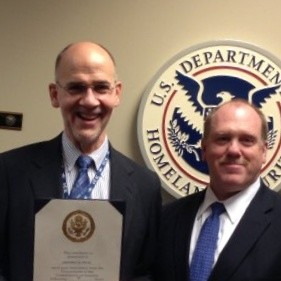
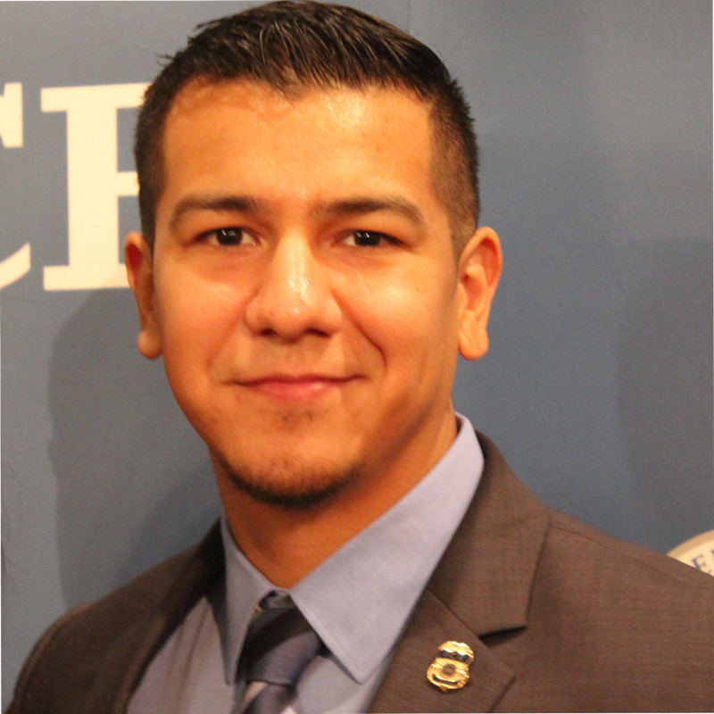
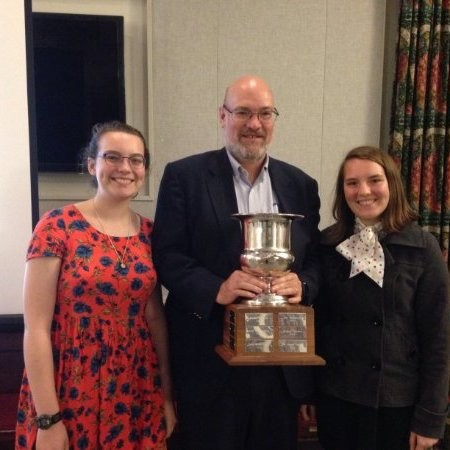
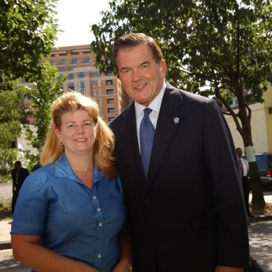
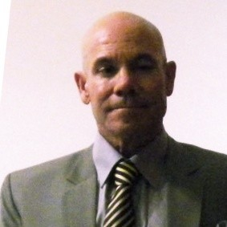

People on LinkedIn who work for ICE
collected by Sam Lavigne
Download as a CSV, or explore the more detailed dataset here.
| Name | Title | Location | |
|---|---|---|---|
| Euna Song | Staff Officer | Phoenix, Arizona Area | |
| Douglas Ruszcyk | Federal Law Enforcement | Greater Pittsburgh Area | |
| Byron J. | Special Agent | Brownsville, Texas Area | |
| Jason Brazie | Deportation Officer | Albany, New York Area | |
| Matthew Allen (ICE/HSI) | Special Agent in Charge | Phoenix, Arizona Area | |

|
Joseph Reuter | Security Manager | Orange County, California Area |
| Nate Fontaine, MSM | Chief, Security Assurance Branch | Washington D.C. Metro Area | |
| Kevin Tyrrell | Supervisory Special Agent | Miami/Fort Lauderdale Area | |
| Michal Grygo | Senior Intelligence Research Specialist | Washington D.C. Metro Area | |
| Christopher Tafe | Supervisory Special Agent / Section Chief | Washington D.C. Metro Area | |
| Robert Gil | FEDERAL AGENT | San Antonio, Texas Area | |
| Abu Saleh | Homeland Security Investigations | United States | |
| Sharon Peyus | Homeland Security Investigations | Washington D.C. Metro Area | |
| David Sayles | Computer Forensic Analyst | Greater Atlanta Area | |
| Samuel Padilla | Computer Forensics Analyst / Human Exploitation Rescue Operative | Jacksonville, Florida Area | |
| Stacy Wiechec | Senior Special Agent | United States | |
| Mark Lenox | Enforcement Program Officer | Baltimore, Maryland Area | |
| Robert J. Nieves, Jr. | Supervisory Special Agent | Greater Denver Area | |
|  | Larry Orton | Retired Federal Law Enforcement (Deputy Field Office Director) | Greater Atlanta Area |
| Marco Suarez | Supervisory Special Agent | Miami/Fort Lauderdale Area | |
| Sean Willman | Supervisory Special Agent, Homeland Security Investigations | Greater New York City Area | |
| Reba McGinnis | Unit Chief, Information Disclosure, Homeland Security Investigations | Washington D.C. Metro Area | |
| Rob Patterson | Criminal Investigator | Greater Seattle Area | |
| Terence Glover | Deportation Officer | Orlando, Florida Area | |
| Edward Bradstreet, CFCE-EnCE | Special Agent | Greater Boston Area | |
| John Czerapowicz | Special Agent | Baltimore, Maryland Area | |
| Kevin Coleman | Special Agent/ National Program Manager | Greater New York City Area | |
| Maria P. Sickels, PhDc | Intelligence Specialist | Anchorage, Alaska Area | |
| Craig Nadler | IT Specialist Information Security | West Palm Beach, Florida Area | |
| Joey Bozik | Computer Forensic Analyst | Dallas/Fort Worth Area | |
| Justin Leone | Associate Legal Advisor - National Security Law Section | Washington D.C. Metro Area | |
| Shareef Smith | U.S. Law Enforcement | Greater Chicago Area | |

|
Rose Arenas | Contracting Officer | Washington D.C. Metro Area |
| Marshall Kennedy | Computer Forensic Analyst | Fayetteville, Arkansas Area | |
| Nicholas Volpicella | Computer Forensic Analyst | Orlando, Florida Area | |
| Raymond Smith | law enforcement supervisor | Washington D.C. Metro Area | |
| Paul Cotcher | Criminal Investigator | Grand Junction, Colorado Area | |
| Deyon Washington | Law Enforcement | Greater Chicago Area | |
| Agnes Hughes | bond control officer | Dallas/Fort Worth Area | |
| George Rodriguez | Special Agent | Dallas/Fort Worth Area | |
| Keith Acosta | Supervisory Detention and Deportation Officer | San Antonio, Texas Area | |
| Tom Betts | Supervisory Agent/Deportation Officer | Killeen/Temple, Texas Area | |
| Mark Mendoza | (Fmr) Senior Special Agent | Greater Los Angeles Area | |
| Devon Haskins | Deportation Officer | Albany, New York Area | |
| Eric Bowers | HSI Special Agent | Springfield, Illinois Area | |
| Harry Burns | Deportation Officer | San Antonio, Texas Area | |
| Albert Rabadi | Special Agent (Criminal Investigator) | Greater Los Angeles Area | |
| Joel N. | Special Agent, Homeland Security Investigations | Greater Los Angeles Area | |
| Eric Munson | Special Agent | Houston, Texas Area | |
| Craig Coleman | Computer Forensics Analyst | Raleigh-Durham, North Carolina Area | |
| Edward Mederos | Special Agent / Special Response Team leader. | Greater Los Angeles Area | |
| Derrick Perry | Supervisory Detention & Deportation Officer | Charlotte, North Carolina Area | |
| Jeff Barczak | Criminal Investigator | Tucson, Arizona Area | |
| Courtney Norris | Deportation Officer | San Francisco Bay Area | |
| Noel Lee | Deportation Officer | Dallas/Fort Worth Area | |
| Timothy Black | Supervisory Detention & Deportation Officer | Greater Seattle Area | |
| Judith Almodovar | Law Enforcement | Greater New York City Area | |
| Joseph Flippo | Deportation Officer | Miami/Fort Lauderdale Area | |
| Shelley Howes | Supervisor for Transportation Security Performance Evaluations | Greater Boston Area | |
| William Kloiber | Deportation Officer | Greater Denver Area | |
| James Burns | Personnel Security | Dallas/Fort Worth Area | |
| Christopher Wallace | Criminal Investigator | Cincinnati, Ohio Area | |
| Sean Mullin | Special Agent | Syracuse, New York Area | |
| Bruce Gauthier | Criminal Investigator | Greater Boston Area | |
| Mike Fernandez | Supervisory Deportation Officer | Greater Seattle Area | |
| Charles Hester | Deportation Officer | Greater New York City Area | |
| Patrick Murray | Deportation Officer | Greater Seattle Area | |
| Patrick Kearns | Detention and Deportation Officer | Baltimore, Maryland Area | |
| Rick Diaz | Deportation Officer | El Paso, Texas Area | |
| Victor Soto | Deportation Officer | Miami/Fort Lauderdale Area | |
| Leslie Brooks | Senior Special Agent | Baltimore, Maryland Area | |
| Balvin Dunn | Deportation Officer | Washington D.C. Metro Area | |
| Eric Bradshaw | Deportation Officer | Las Vegas, Nevada Area | |
| Jarat Lee Santikul | Investigator | Bangkok Metropolitan Area, Thailand | |
| Nicole Yandow | Law Enforcement Specialist | Burlington, Vermont Area | |
| Luis Maldonado | Detention and Deportation Officer | Washington D.C. Metro Area | |
| Rich Gallagher | Intelligence Research Specialist | Greater New York City Area | |
| Sir Streeter | Special Agent | Greater Atlanta Area | |
| Lynn Ziegler | Retired | Greater Los Angeles Area | |
| Natalie Hancock | Deportation Officer | Phoenix, Arizona Area | |
| Nelson Mercado | Deportation Officer | Greater New York City Area | |
| Don Ivey | Supervisory Detention and Deportation Officer | Oklahoma City, Oklahoma Area | |
| Ruben Canales | Deportation Officer | Brownsville, Texas Area | |
| Matthew Burns Jr | Law Enforcement | Northern Mariana Islands area | |
| Don Bromberg | Senior Special Agent | Miami/Fort Lauderdale Area | |
| Jake ICE Phelps | Police Officer | Greater New York City Area | |
| Scott Bocksel | senior special agent | Washington D.C. Metro Area | |
| Kevin 2509 Cronin | Senior Special Agent | Greater Boston Area | |
| William Griffen | Supervisory Special Agent | Greater San Diego Area | |
| R. Franklin | SPECIAL AGENT | Miami/Fort Lauderdale Area | |
| Melanie Thomas | Special Agent | Greater Los Angeles Area | |
| Chris Woluewich | Customs officer | Greater New York City Area | |
| Stewart Harvey | Supervisory Special Agent | Greater Los Angeles Area | |
| daniel ramirez | Senior Special Agent | El Paso, Texas Area | |
| Rachel Johnson | Detention Officer | Miami/Fort Lauderdale Area | |
| Gary Reece | Retired law enforcement | Greater Seattle Area | |
| Shelton Mirc | Senior Intelligence Research Specialist | Phoenix, Arizona Area | |
| Willy Ochoa | Senior Special Agent | El Paso, Texas Area | |
| Robert Babcock | Supervisory Special Agent | Greater Chicago Area | |
| Joe Del | Deputy District Director Investigations | Greater Los Angeles Area | |
| Mark Zito | Assistant Special Agent in Charge, Homeland Security Investigations (HSI) | Orange County, California Area | |
| Dustin Mehsling | Special Agent | Greater Denver Area | |
| Mike Macqueen | Investigator | Washington D.C. Metro Area | |
| Brad M. | Deportation Officer (1801) | Washington D.C. Metro Area | |
| James Adams | Deportation Officer | Greater San Diego Area | |
| Gunnar Pedersen | Deportation Officer | Miami/Fort Lauderdale Area | |
| Andrew Onello | Security Assessment and Penetration Testing Lead | Columbia, South Carolina Area | |
| Jake Dobberke | Computer Forensic Analyst | Kansas City, Missouri Area | |
| Michael McCarthy | Deputy Special Agent in Charge | Greater New York City Area | |
| Patrick J. "P.J." Lechleitner | HSI Special Agent in Charge (SAC) | United States | |
| Daniel F Mikolay | Assistant Special Agent in Charge | San Angelo, Texas Area | |
| R. Scott Harris | Special Agent (HSI) | Greater Atlanta Area | |
| Jason Samuels | Special Agent | Greater New York City Area | |
| Jada Keltz | Supervisory Intelligence Research Specialist | Miami/Fort Lauderdale Area | |
| Eric M. | Criminal Investigator | Miami/Fort Lauderdale Area | |
| William Puff | Assistant Special Agent in Charge | Greater Seattle Area | |
| Patrick Fahey | Retired HSI Special Agent | Dallas/Fort Worth Area | |
| Chris Watkins | Supervisory Special Agent/Group Supervisor | Greater New Orleans Area | |
| Monica Mapel | Assistant Special Agent in Charge | San Antonio, Texas Area | |
| Scott Johnston | Program Manager, Law Enforcement Information Sharing | Miami/Fort Lauderdale Area | |
| Jon N. | Special Agent | Washington D.C. Metro Area | |
| Gabriel Martinez | Deportation Officer | Greater Seattle Area | |
| LaShawn Powell | Special Assistant, Fugitive Operations Division | Washington D.C. Metro Area | |
| Alex Chan | Criminal Investigator/Special Agent | San Francisco Bay Area | |
| Michael Calvo | HSI Special Agent | Miami/Fort Lauderdale Area | |
| Wendy Ireland | Emergency Management Specialist | Washington D.C. Metro Area | |
| Christopher Harms | Deportation Officer | Greater Denver Area | |
| Brian Stewart | Special Agent | Greater Detroit Area | |
| David Morris | Assistant Special Agent in Chart | Washington D.C. Metro Area | |
| John Deaton | Supervisory Special Agent | Greater Detroit Area | |
| Martin Spille | Senior Special Agent | Greater Los Angeles Area | |
| Christopher Read | Senior Special Agent | Brownsville, Texas Area | |
| Manuel De Leon | Federal Officer | Greater New York City Area | |
| Paul O'Brien | Technical Enforcement Officer | Charlotte, North Carolina Area | |
| Brittany Tobias | Contracting Officer | Washington D.C. Metro Area | |
| Van Stephens | Special Agent | Dallas/Fort Worth Area | |
| Brent Moore | Senior Special Agent | United States | |
| Samuel Nugent | Supervisory Detention and Deportation Officer | Phoenix, Arizona Area | |
| Scott Thompson | Homeland Security Investigations (HSI) Special Agent / Senior Firearms Instructor | Indianapolis, Indiana Area | |
| Brad Maison | Emergency Management Specialist | Washington D.C. Metro Area | |
| Matthew Lopez | Supervisory Detention & Deportation Officer | Greater San Diego Area | |
| Christopher H. | Special Agent and Computer Forensics Agent | Dallas/Fort Worth Area | |
| Christopher Jeffreys | Supervisory Intelligence Research Specialist | El Paso, Texas Area | |
| Shane Watts | Special Agent | Washington D.C. Metro Area | |
| Russ Spruance | Special Agent (Retired) | Hickory/Lenoir, North Carolina Area | |
| Austin Shaver | Supervisory Special Agent | Baltimore, Maryland Area | |
| Francis Kemp | Deportation Officer | Greater New York City Area | |
| Maria Gilbert | Criminal Investigator | Houston, Texas Area | |
| Robert Alaniz Jr. | Deportation Officer | Houston, Texas Area | |
| Christopher Palazzo | Deportation Officer | West Palm Beach, Florida Area | |
| Rebecca Fisher | Deportation Officer | Tampa/St. Petersburg, Florida Area | |
| Ronald Bissonnette | Law Enforcement Specialist | Burlington, Vermont Area | |
| Christopher Maloney | Criminal Investigator | Tucson, Arizona Area | |
| Mark Rhoades | Deportation Officer | Panama City, Florida Area | |
| Matthew Lester | IT Specialist (Information Security) | Washington D.C. Metro Area | |
| John Schwink | Chief-Personnel Security Unit | Dallas/Fort Worth Area | |
| Miguel Palomino | Criminal Investigator | Greater Los Angeles Area | |
| michael morris | Deportation Officer | Greater Atlanta Area | |
| Bryan Wheeler | Deportation Officer | Amarillo, Texas Area | |
| richard wilkens | Staff Officer | United States | |
| Joshua F. | Special Agent | Burlington, Vermont Area | |
| Joshua Kincaid | Law Enforcement Specialist | Buffalo/Niagara, New York Area | |
| Christopher Carter | Supervisory Special Agent | Greater Los Angeles Area | |
| John Hardisson | Deportation Officer | Miami/Fort Lauderdale Area | |
| Sean Nails | Deportation Officer | Greater Chicago Area | |
| Derek Hadrian | Homeland Security | Reunion | |
| Neil Marley | SPECIAL AGENT | Bismarck, North Dakota Area | |
| Gilbert Longoria | Deportation Officer | Phoenix, Arizona Area | |
| Gregory Styles | Embassy Liaison Officer (DDO) | Washington D.C. Metro Area | |
| Rosevelt Holdin | TFO / Homeland security | Raleigh-Durham, North Carolina Area | |
| Jill Martin | Criminal Intelligence Analyst | Houston, Texas Area | |
| Scott Livingston | Deportation Officer | San Antonio, Texas Area | |
| Gary C | Special Agent | Miami/Fort Lauderdale Area | |
| Richard Espinoza | Deportation Officer | Greater Los Angeles Area | |
| Cambisi Anthony | Deportation Officer | Indianapolis, Indiana Area | |
| Alex Bragg | Deportation Officer | Kansas City, Missouri Area | |
| Ron Batley | Supervisory Deportation Officer | Charleston, South Carolina Area | |
| Aron Brown | Personal Security | Dallas/Fort Worth Area | |
| Dale Kramer | Deportation Officer | Sioux City, Iowa Area | |
| Howard KromeDMARC | Deportation Officer | Miami/Fort Lauderdale Area | |
| Antonino Giovenco | Deportation Officer | Buffalo/Niagara, New York Area | |
| Ronald Lee | Special Agent | Greater San Diego Area | |
| Jerrico Leason | Deportation Officer | Colorado Springs, Colorado Area | |
| Vladimir Martinez-Jimenez | Intelligence Operations Specialist | Washington D.C. Metro Area | |
| charlie250 Clem-Chalie | police | Dominica | |
| Jerry Conrad | Special Agent | Yuma, Arizona Area | |
| Bryan Moser | Deportation Officer | Greater New York City Area | |
| David Vargas | Deportation Officer | San Francisco Bay Area | |
| Douglas Ruszcyk | Federal Law Enforcement | Greater Pittsburgh Area | |
| Michael Higginbotham | Deportation Officer | Houston, Texas Area | |
| Richard Kellner | Senior Special Agent | Tampa/St. Petersburg, Florida Area | |
| Ken Yeung | Crim Investigator | Hong Kong | |
| Cornelius O'Rourke | Special Agent | Buffalo/Niagara, New York Area | |
| Martinez Alberto | Investigative Assistance, Special Agent | Jacksonville, Florida Area | |
| Jessie Hernandez | Deportation Officer | Greater Chicago Area | |
| Bill Tupy | Sup Deportation Officer (retired) | Amarillo, Texas Area | |
| Charles Hedges | Law Enforcement Officer | Portland, Oregon Area | |
| Bridget O'Donnell | Law Enforcement Specialist | Burlington, Vermont Area | |
| Ryder Burpo | Law Enforcement Specialist | Burlington, Vermont Area | |
| Calivn Bradford | Special Agent | Houston, Texas Area | |
| Adam Parks | Assistant Special Agent in Charge | Baltimore, Maryland Area | |
| James Bentz | Criminal Intelligence Analyst | Providence, Rhode Island Area | |
| Jason Madrigal | Deportation Officer | Greater New York City Area | |
| Annemarie Brennan-Linnan | Associate Legal Advisor, National Security Law Section | Washington D.C. Metro Area | |
| Andrea Navarro | Dept of Homeland Security | Dallas/Fort Worth Area | |
| Bernardo Pillot | Assistant Special Agent in Charge (ASAC) | Charleston, South Carolina Area | |
| Kyle Burns | Assistant Special Agent in Charge | Greater Detroit Area | |
| Bryan McPherson | Assistant Special Agent in Charge | Greater Philadelphia Area | |
| Patrick M. Hudgens | Supervisory Special Agent | Washington D.C. Metro Area | |
| Chaz Davis | Supervisory Special Agent | Washington D.C. Metro Area | |
| John Ma | Special Agent | Washington D.C. Metro Area | |
| Paul Waldron, CAMS | Supervisory Special Agent | Greater New York City Area | |
| Kurtis Palm | Deportation Officer | Indianapolis, Indiana Area | |
| Jacob Ratliff | Homeland Security Investigations | Greater San Diego Area | |
| Willie Phillips | Emergency Management Specialist | Washington D.C. Metro Area | |
| Sheila Blandon | Personnel Security Assistant | Dallas/Fort Worth Area | |
| Peter Fellenz | Deportation Officer | Greater Minneapolis-St. Paul Area | |
| Eric Fletcher | Senior Intelligence Research Specialist | Washington D.C. Metro Area | |
| JD Y. | Deportation Officer | Greater Chicago Area | |
| Justin de Castro | Deportation Officer | San Francisco Bay Area | |
| Julio Castro | Law Enforcement Officer | Miami/Fort Lauderdale Area | |
| Jeffery Chappell, CFCE, ACE, EnCe | Special Agent | Houston, Texas Area | |
| Justin Brown | Detention Lieutenant | Sacramento, California Area | |
| Kyle Hobart | Supervisory Detention & Deportation Officer | Syracuse, New York Area | |
| Brian Balkovec | Deportation Officer | Houston, Texas Area | |
| Beth Thomas | Intelligence Analyst | Washington D.C. Metro Area | |
| Miranda Collins | Contracting Officer | Washington D.C. Metro Area | |
| Anthony Estrella | Deportation Officer | Greater New York City Area | |
| Christine Choo | Federal Officer | Orlando, Florida Area | |
| Jarrett Atkinson | Deportation Officer | Houma, Louisiana | |
| Joe Quattrocchi | Senior Special Agent (OPR) | Greater New York City Area | |
| Anthony Miranda | Deportation Officer | Greater Los Angeles Area | |
| Richard Lall | Deportation Officer | Northern Mariana Islands area | |
| Chatham McCutcheon | Deportation Officer | Portland, Oregon Area | |
| Josh Turner | Computer Forensic Analyst | Tampa/St. Petersburg, Florida Area | |
| Jeffrey Martinez | Deportation Officer | Columbus, Georgia Area | |
| William Clark | Deportation Officer | Hartford, Connecticut Area | |
| William Rusche | Special Agent/ Criminal investigator | Greater New Orleans Area | |
| Christopher Cox | Deportation Officer | Greater Atlanta Area | |
| Olajuwon Davis | Deportation Officer | Houston, Texas Area | |
| Bjorn Olson | Computer Forensic Analyst | Spokane, Washington Area | |
| Sean Velazquez | Deportation Officer | Greater Denver Area | |
| John Tucciarone | Deportation Officer | Greater New York City Area | |
| Jason Richardson | Law Enforcement | Greater New York City Area | |
| Derrick Chism | Supervisory Detention Deportation Officer | Greater St. Louis Area | |
| Leonid Peets | Law Enforcement Officer | Jacksonville, Florida Area | |
| Timothy Tubbs | Deputy Special Agent in Charge | Laredo, Texas Area | |
| Elvia Wilcox | Law Enforcement Officer | Greater San Diego Area | |
| Daniel Main | Intelligence Research Specialist | Greater Boston Area | |
| Miley James | Senior Special Agent | Orlando, Florida Area | |
| John Bustamante | Intelligence Research Specialist | Washington D.C. Metro Area | |
| Mercedes Jordan | Detention Officer at the El Paso Processing Center | El Paso, Texas Area | |
| Jaime Maldonado | Deportation Officer | Greater Seattle Area | |
| Kevin M Thompson | Supervisory Detention and Deportation Officer/ medical docket: detention standards & compliance | Charlotte, North Carolina Area | |
| Efren Chapa | Deportation Officer | Brownsville, Texas Area | |
| Lee Totah | Criminal Investigator (Special Agent) | Greater Los Angeles Area | |
| Felix Ramos, Jr. | Supervisory Detention and Deportation Officer | Greater Chicago Area | |
| Robert Moore | Journeyman Deportation Officer | Phoenix, Arizona Area | |
| Willie Outlaw | Deportation Officer | Greater New York City Area | |
| Tom Solem | Senior Force Protection Officer (CTR)/TRADOC | Washington D.C. Metro Area | |
| Michael Breder | Intelligence Research Specialist | Washington D.C. Metro Area | |
| Dada C. | Special Agent | United States | |
| Katlyn Woods | Intelligence Analyst | Washington D.C. Metro Area | |
| Aaron Raynor | Deportation Officer | Greater Los Angeles Area | |
| chris lugard | Army Officer | Nigeria | |
| Derrick Eleazer | Federal Agent | Baltimore, Maryland Area | |
| Christopher Wyatt | Personnel Security | Washington D.C. Metro Area | |
| Martin Gutierrez | Homeland Security | Phoenix, Arizona Area | |
| Jean-Claude Nolan | Federal Agent | Kansas City, Missouri Area | |
| Rick Null | IT Specialist, Information Security | Phoenix, Arizona Area | |
| Scott White | Deportation Officer | Yuma, Arizona Area | |
| Scott Saving | Supervisory Detention and Deportation Officer | Kansas City, Missouri Area | |
| Keith Chan | Deportation Officer | Greater Boston Area | |
| Anthony Martinez | Deportation Officer | San Antonio, Texas Area | |
| Martin Bermudez | Supervisory Detention and Deportation Officer | Rochester, New York Area | |
| David Williard | law enforcement speicilist | Burlington, Vermont Area | |
| Sean Hayhurst | Law Enforcement Specialist | Burlington, Vermont Area | |
| Greg Hartfield | Detention and Deportation Officer | Washington D.C. Metro Area | |
| Whitney Payte | Supervisory Detention & Deportation Officer | Amarillo, Texas Area | |
| Michael Gerwin | Security Specialisr | Washington D.C. Metro Area | |
| Us Alerts | Security service | Macon, Georgia Area | |
| Jim Reed | Federal Agent | Greater San Diego Area | |
| Ryan Hubbard | Special Agent | Greater Nashville Area, TN | |
| Rosalie Bullen | Criminal Investigator | Richmond, Virginia Area | |
| Roberta Halls | Contracting Officer | Orange County, California Area | |
| George Cole | Retired Federal Agent | Greater Chicago Area | |
| A N | Detention officer | Greater Los Angeles Area | |
| Scott White | Deportation Officer | Yuma, Arizona Area | |
| Tim Jones | Criminal Investigator | Greater St. Louis Area | |
| Brent Oxley | Deportation Officer | Little Rock, Arkansas Area | |
| Sergio De Leon Jr. | Deportation Officer | Brownsville, Texas Area | |
| Jorge Oliva | Federal Agent | Las Vegas, Nevada Area | |
| Larry Cannan | Special Agent/Coordinator | Buffalo/Niagara, New York Area | |
| Ibrahim Ashmed | Transportation officer | Greater New York City Area | |
| Todd L. | Federal Officer | Syracuse, New York Area | |
| ALEXANDER BRAGG | Deportation Officer | Wichita, Kansas Area | |
| Bill Sloan | Deportation Officer | Sarasota, Florida Area | |
| Juan Ramirez | Deportation Officer | Greater Los Angeles Area | |
| Jasper Chan | Deportation Officer | Greater Los Angeles Area | |
| Jared Smith | Deportation Officer | Greater New York City Area | |
| Dr. John Drakeford | Law Enforcement Officer | Harrisburg, Pennsylvania Area | |
| Niko Ceja | Intelligence Operations Specialist | Washington D.C. Metro Area | |
| Hector X Colon | Assistant Special Agent in Charge | Tampa/St. Petersburg, Florida Area | |
| Rodney Abercrombie | SSO - Special Security Officer | US Military Posts in Europe | |
| Joseph Williams | Chief Of Staff | Washington D.C. Metro Area | |
| Matthew Gabe | Assistant Chief Counsel | San Francisco Bay Area | |

|
Kendra Jenkins | Program Management Officer | Washington D.C. Metro Area |
| Eliu Estrada | International Advanced Law Enforcement Training/ Course Developer/ Instructor | Charleston, South Carolina Area | |
| Brian Sherota | Supervisory Special Agent | Miami/Fort Lauderdale Area | |
| Sherilyn Streicker | Criminal Investigator | Greater San Diego Area | |
| Amy Sprague | Identity Intelligence Operations Analyst | Tampa/St. Petersburg, Florida Area | |
| Joseph Foster | 287g Designated Immigration Officer | Naples, Florida Area | |
| Roger L. Aarons | Homeland Security Investigations Liaison to TSA | Washington D.C. Metro Area | |
| Brian Ramsey | Assistant Special Agent in Charge | El Paso, Texas Area | |
| John Z. | Special Agent | Greater Los Angeles Area | |
| Gene J Paulauskas | Assistant Special Agent in Charge | Greater Minneapolis-St. Paul Area | |

|
Michael Byrd | Deportation Officer | Raleigh-Durham, North Carolina Area |
| Glenn Spindel | Supervisory Special Agent, Special Operations Division | Washington D.C. Metro Area | |
| Miguel Ramirez | Supervisory Special Agent | West Palm Beach, Florida Area | |
| Brian Padian | Resident Agent in Charge (RAC) | Raleigh-Durham, North Carolina Area | |
| Mervyn J. De La Torre | Country Attach/Supervisory Criminal Investigator | Washington D.C. Metro Area | |

|
Chris Guyer | Chief of Staff - Office of Professional Responsibility | Washington D.C. Metro Area |
| Matthew Christianson | Emergency Management Specialist | Baltimore, Maryland Area | |
| Mike Carney | Deputy Special Agent in Charge | Greater San Diego Area | |
| James Wilson, Jr | 287(g) Program Manager/Supervisory Deportation Officer | Greater New York City Area | |
| David Byrd | Senior Physical Security Manager | San Francisco Bay Area | |
| Harold Honegger | Contracting Officer | Washington D.C. Metro Area | |
| Sean M. S. | Detention and Deportation Officer (Program Manager) | Orlando, Florida Area | |
| Shenan Carroll | Intelligence Analyst, Human Smuggling Cell | Washington D.C. Metro Area | |
| Richard Lyons | Acting Assistant Special Agent in Charge, ICE Office of Professional Responsibility (OPR) | United States | |
| Brandon K. G. | Intelligence Research Specialist | Greater Philadelphia Area | |
| Bruce Busby | Special Agent | Greater Atlanta Area | |
| Kelvin Glymph | Deputy Assistant Director, Contracting Officer | Washington D.C. Metro Area | |
| Robert Holscher | Management and Program Analyst | Washington D.C. Metro Area | |
| Nicole Solander | Group Supervisor | Sacramento, California Area | |
| Cynthia Ludington | Managment and Program Analyst | Washington D.C. Metro Area | |
| Tim Westlove | Special Agent/Program Manager | Washington D.C. Metro Area | |

|
Rajeev Sharma | Immigration and Customs Investigator, US Department of Homeland Security | New Delhi Area, India |
| Rich Nicorvo, CEM, PMP | Unit Chief, Incident and Special Response Unit | Washington D.C. Metro Area | |
| Miguel L Carrasquillo | Technical Enforcement Officer | Washington D.C. Metro Area | |
| Michael McLaughlin | Intelligence Analyst | Washington D.C. Metro Area | |
| Charles Gibbs | Deportation Officer | York, Pennsylvania Area | |
| Logan W. | Deportation Officer | San Francisco Bay Area | |
| Christopher Kudless | Computer Forensics Agent | Greater Philadelphia Area | |
| Jeannetta S Evans | Watch Officer | Washington D.C. Metro Area | |
| Kelly Anderson CHS IV, SSI | Enforcement and Removal Office | Miami/Fort Lauderdale Area | |
| Jesse Lewis | Investigative Analyst | Burlington, Vermont Area | |
| Chuck Kirk | Detention and Deportation Officer National Fugitive Operations Program | Washington D.C. Metro Area | |
| Joanne Johnson | Criminal Targeting Specialist | Burlington, Vermont Area | |
| Paul Valvo | Computer Forensic Analyst (HERO)(Human Exploitation Rescue Operative) | Hartford, Connecticut Area | |
| Paul Bevard | Immigration Enforcement Agent | Washington D.C. Metro Area | |
| James Adams | Deportation Officer | Greater San Diego Area | |
| Heather A. | Special Agent | Brownsville, Texas Area | |
| Jason Edmister | Deportation Officer | Columbus, Ohio Area | |
| Christopher Jacobs | Deportation Officer | Buffalo/Niagara, New York Area | |
| June Adams | Deportation Officer | Greater Minneapolis-St. Paul Area | |
| Frank P. | Special Agent | Greater New York City Area | |

|
Kristal Pena | Deportation Officer | San Antonio, Texas Area |
| Bhrugesh Patel | Law Enforcement Specialist | Orlando, Florida Area | |
| Tim Lenzen | Supervisory Special Agent | Phoenix, Arizona Area | |
| Christian Lamborn | Immigration Officer | Greater San Diego Area | |
| Gerardo C. | USICE Agent (HQ) | Washington D.C. Metro Area | |
| Marco Ruiz | Deportation Officer/Special Response Team Operator | Greater Chicago Area | |
| Gabriel Ruiz | Deportation Officer | Greater San Diego Area | |
| Creigon Ellis | law enforcement specialist | Greater Philadelphia Area | |
| Daniel Finn | Deportation Officer | Greater Philadelphia Area | |
| Lagarion Brown | Deportation Officer | Miami/Fort Lauderdale Area | |
| Ariel Valdez | Deportation Officer | Greater New York City Area | |
| Eli Moran | Deportation Officer | Richmond, Virginia Area | |

|
Lucas Penn | Deportation Officer | Stockton, California Area |
| Adam Khalil | Deportation Officer | Houston, Texas Area | |
| Linda Past | Director, ICE Law Enforcement Support Center | Burlington, Vermont Area | |
| Faith S. | Intelligence Research Specialist | Washington D.C. Metro Area | |
| Ron Seely | Deputy Chief | Washington D.C. Metro Area | |
| Andrew Chiles | Intelligence Research Specialist | Dallas/Fort Worth Area | |
| Ricky Colegrove | Deportation Officer | Longview, Texas Area | |
| Dan Athanasaw | Performance Analyst | Washington D.C. Metro Area | |
| James Banks | Deportation Officer | Cleveland/Akron, Ohio Area | |
| Carol Lazzaro | Associate Legal Advisor | Washington D.C. Metro Area | |
| Greenbaum Alan | Assistant Field Office Director | Greater Boston Area | |
| Sylvester Phekoo | Deportation Officer | Greater New York City Area | |
| Chris Chamberlain | Deportation Officer | Wichita, Kansas Area | |
| Sara Badger | Law Enforcement Specialist | Burlington, Vermont Area | |
| Brenda Allport | Intelligence Research Specialist | Washington D.C. Metro Area | |
| Jake Summers | Student Trainee | Greater St. Louis Area | |
| Chris Oslin | Investigator | Baltimore, Maryland Area | |
| Daniel Kaiser, SFPC | Personnel Security Specialist | Dallas/Fort Worth Area | |
|  | CHRISTOPHER GAMEZ | Deportation Officer | San Antonio, Texas Area |
| Mark Elias | Designated Immigration Officer | Houston, Texas Area | |
| Anthony Webb | Contracting Officer | Dallas/Fort Worth Area | |
| William Flood | Intelligence Research Specialist | San Antonio, Texas Area | |
| Regina Calhoun | Intelligence Analyst | Greater Chicago Area | |
| David Singh | Deportation Officer | West Palm Beach, Florida Area | |
| Tanika Sanders | Special Agent | Washington D.C. Metro Area | |
| Mary De Anda-Ybarra | Deportation Officer | El Paso, Texas Area | |
| James Gwinn | Contracting Officer | Myrtle Beach, South Carolina Area | |
| Walter Le Roy | Supervisory Detention and Deportation Officer | Washington D.C. Metro Area | |
| Howard Bolick | Special Agent / Legislative Fellow | Washington D.C. Metro Area | |
| Rik Webb | Designated Immigration Officer | Houston, Texas Area | |
| John A | Deportation Officer | Greater Boston Area | |
| Michael Sharp | Officer | Greater Philadelphia Area | |
| Nathan Rasper | Detention Standards Compliance Officer (SME) | Alexandria, Louisiana Area | |
| Gina Mostafaie | Government Information Specialist | Washington D.C. Metro Area | |
| Tammy Spicer | Public Affairs Officer | Tampa/St. Petersburg, Florida Area | |
| Dan Cutchens | Recruiter | Greater Boston Area | |
| Doug Green | Special Agent | Greater Philadelphia Area | |
| Douglas Gilmer | Resident Special Agent in Charge | Birmingham, Alabama Area | |
| Dee Norton | Special Assistant to the Deputy Assistant Director for ICE Air Operations | Phoenix, Arizona Area | |
| Jason Henry | Unit Chief Law Enforcement Information Sharing Initiative | Washington D.C. Metro Area | |
| Rafa Conde | Hostage Negotiator HNT | West Palm Beach, Florida Area | |
| Jere Miles | Deputy Assistant Director, Investigative Services Division | Greater New Orleans Area | |
| Stephen Miller | Field Intelligence Officer | San Francisco Bay Area | |
| Fidel Esparza III | Assistant Chief Counsel | San Antonio, Texas Area | |
| Benjamin Buchta | Deportation Officer | Washington D.C. Metro Area | |
| Wm. David Jones | President Of The Board Of Directors | Greater Los Angeles Area | |
| John O'Connor | Intelligence Analyst | Washington D.C. Metro Area | |
| Tim Colson | Intelligence Research Specialist | Washington D.C. Metro Area | |
| Toni Dupard-North | Supervisory Detention & Deportation Officer | Birmingham, Alabama Area | |

|
Elhrick C. | Special Agent | Miami/Fort Lauderdale Area |
| Joshua Rodriguez | Intern | Greater New York City Area | |
| Matthew O'Brien | Special Investigator | Mansfield, Ohio Area | |
| Robert Bernal | Supervisory Detention and Deportation Officer | Greater Atlanta Area | |
| Elizabeth Leong | Intern | Greater Boston Area | |
| Casie Matter | Paralegal Specialist | Washington D.C. Metro Area | |
| Edgardo Centeno | Deportation Officer | Other | |
| David Nejand | Security Assurance Manager | Washington D.C. Metro Area | |
| JUSTIN DILONE | Deportation Officer (Operation War Fighter Intern) | Greater San Diego Area | |
| Niko DeCristofaro | Internship | Greater New York City Area | |
| Noor Phillips | Title III Moniter- Linguist (Arabic) | Colorado Springs, Colorado Area | |
| Frank Franco | Senior Field Training Officer | Greater New York City Area | |
| William Chin | Deportation Officer-Fugitive Operations | Richmond, Virginia Area | |
| Douglas McKenna, PMP | Deputy Chief, Quality Assurance Branch, Solutions Delivery Division, OCIO | Washington D.C. Metro Area | |
| Cherie Go | Sr. Program Analyst | Washington D.C. Metro Area | |
| Kenneth Padilla | Deputy Principal Legal Advisor for Field Legal Operations | Washington D.C. Metro Area | |
| Luis Rendon | Operations/Program Manager | Washington D.C. Metro Area | |
| George Sterling | Deputy Field Office Director | Greater Atlanta Area | |
| Jack Bennett | Deputy Field Office Director | Greater San Diego Area | |

|
Marc Moore | Field Office Director | Miami/Fort Lauderdale Area |
| Jeffrey D. Lynch | Field Office Director | Greater Denver Area | |
| Hilary Pullen | Management Program Analyst GS-13-0343 | Washington D.C. Metro Area | |
| Timothy Aitken | Field Office Director | San Francisco Bay Area | |
| C. Denise Moore | Management & Program Analyst | Washington D.C. Metro Area | |
| Al Santos | ICE OCIO Field Operations Govt IT and Project Lead | Washington D.C. Metro Area | |
| Scott Rozzelle | Management and Program Analyst | Washington D.C. Metro Area | |
| Sean Ervin | Assistant Field Office Director | Greater Atlanta Area | |
| Kristy Singletary | Management Program Analyst | Washington D.C. Metro Area | |
| Will Williams | Program Management Officer/Contract Officer's Representative | Washington D.C. Metro Area | |
| Conrad Agagan | Assistant Field Office Director | Orlando, Florida Area | |
| Kelly Horecky | Management Program Analyst | Washington D.C. Metro Area | |
| Joseph Lombardo | Deputy Field Office Director | Las Vegas, Nevada Area | |
| John Martinez | Unit Chief for ICE Air Operations | Phoenix, Arizona Area | |
| Tarah Murphy | Management and Program Analyst | Washington D.C. Metro Area | |
| Jacqueline Haile | Supervisory Management and Program Analyst | Washington D.C. Metro Area | |
| Richard Catalon MS, PMP, CISA | Branch Director, Acquisition Management, ICE Office of Chief Information Officer | Washington D.C. Metro Area | |
| Jennell Thomas Lewis | Management Program Analyst | Washington D.C. Metro Area | |
| Dionne Jones | Management and Program Analyst | Baltimore, Maryland Area | |
| Robert Rochester | Sr Management & Program Analyst/Project Manager | Washington D.C. Metro Area | |
| Jay Dell | Management & Program Analyst | Washington D.C. Metro Area | |
| Robert J. Alfieri | Assistant Field Office Director | Charlotte, North Carolina Area | |
| Reiss K. | Management and Program Analyst | Washington D.C. Metro Area | |
| Scott Blake | Assistant Field Office Director | Scranton, Pennsylvania Area | |
| Candace Kerr | Supervisory Management Program Analyst | Washington D.C. Metro Area | |
| Shonchotsani Y. | Management Program Analyst | Washington D.C. Metro Area | |
| Lyle Boelens | Assistant Field Office Director | Washington D.C. Metro Area | |
| William Waddington | Management and Program Analyst | Phoenix, Arizona Area | |
| Susanna Warner | Supervisory Management and Program Analyst | Baltimore, Maryland Area | |
| Luisito Maligat | Management and Program Analyst | Washington D.C. Metro Area | |
| Daniel Gross | Management Program Analyst | Las Vegas, Nevada Area | |
| Lovely Epps | Program Analyst | Washington D.C. Metro Area | |
| Pamela Ashanti-Griggs | Management and Program Analyst | Washington D.C. Metro Area | |
| Douglas Rustan | Management and Program Analyst | Washington D.C. Metro Area | |
| Kristine Brisson | Assistant Officer in Charge (AOIC) | Phoenix, Arizona Area | |
| Beau Allen | Senior Field Training Officer | Miami/Fort Lauderdale Area | |
| Miguel Vergara | Assistant Field Office Director | Dallas/Fort Worth Area | |
| Linda Tadrus | Management and Program Analyst | Washington D.C. Metro Area | |
| Kristal Watts | Mission Support Specialist / Fleet Manager | Greater Chicago Area | |
| Corey Snyder | Safety & Health Management and Program Analyst | Washington D.C. Metro Area | |
| Derek Long | Management and Program Analyst | Washington D.C. Metro Area | |
| Amy Powell | Management and Program Analyst | Washington D.C. Metro Area | |
| Katherine Sheridan | Management Program Analyst | Washington D.C. Metro Area | |
| Megan Littlejohn | Enforcement and Removal Operations | Colorado Springs, Colorado Area | |
| Tonja Cosey | Management and Program Analyst | Washington D.C. Metro Area | |
| Robert Hobart | Management and Program Analyst | Greater Denver Area | |
| Jesse Williams | Assistant Field Office Director | Brownsville, Texas Area | |
| Anita Holland | Supervisory Management and Program Analyst | Washington D.C. Metro Area | |
| Mike Burtis | Exporter | Fayetteville, Arkansas Area | |
| Daniel Mackey | Management Program Analyst | Greater New York City Area | |
| Jill Hicks | Management and Program Analyst | Washington D.C. Metro Area | |
| Felicia Clark | Management & Program Analyst | Washington D.C. Metro Area | |
| Marcella Hayes | Management and Program Analyst | Washington D.C. Metro Area | |
| Dennis Garner | Enforcement Operations Supervisor | San Antonio, Texas Area | |
| Benny L. Smith Jr. | Occupational Safety and Health Program Manager | Washington D.C. Metro Area | |
| Amar Mundzahasic | Management & Program Analyst | Washington D.C. Metro Area | |
| Miguel Cruz | Management and Program Analyst | Washington D.C. Metro Area | |
| Nathalie Asher | Asst Field Office Director | Greater Seattle Area | |
| Lisa Lockman | Management Program Analyst | Greater Seattle Area | |
| C. Denise Winter | Management Program Analyst | Washington D.C. Metro Area | |
| Denise Moore | Management and Program Analyst | Washington D.C. Metro Area | |
| Robert Alfieri | Assistant Field OfficeDirector | Charlotte, North Carolina Area | |
| Cuthbert Jacobs | Management and Program Analyst | Washington D.C. Metro Area | |
| Garry L Branch | Management and Program Analyst | Washington D.C. Metro Area | |
| Ray Linsdey | Enforcement and Removal Operations | Greater New York City Area | |
| Benny Smith | Safety and Occupational Health Manager | Washington D.C. Metro Area | |
| Alfredo Campos | Deputy Field Office Director | El Paso, Texas Area | |
| John "Too Tall" Milian | Assistant Field Office Director | Greater New Orleans Area | |
| Chelsea Elston | Management & Program Analyst | Baltimore, Maryland Area | |
| Damian Matthews | Management and Program Analyst (Records) | United States | |
| Jeff Searls | Assistant Officer In Charge | Rochester, New York Area | |
| Paul Hester | Management and Program Analyst | Washington D.C. Metro Area | |
| Chrissy Ward | Management Program Analyst | Washington D.C. Metro Area | |
| Renee Shawn Clement | Special Assistant to the Field Office Director | Washington D.C. Metro Area | |
| charles willis | Supervisor Management and Program Analyst | Washington D.C. Metro Area | |
| Mike Skelton | Contract Officer Representative COR | Phoenix, Arizona Area | |
| Cynthia Ahmed | Retired U.S Customs Specialist | Greater Atlanta Area | |
| Linda Ward | management program analyst | Orange County, California Area | |
| elham kharazmi | expert customs | Iran | |
| Cheryl Poisson | Management and Program Analyst | Phoenix, Arizona Area | |
| Robert brother Culley | Deputy Field Office Director | Greater San Diego Area | |
| Patrick Contreras | Field office director | Houston, Texas Area | |
| Linwood Weaver | Management & Program Analyst | Washington D.C. Metro Area | |
| Kathy Baker | Supervisory Management and Program Analyst | Washington D.C. Metro Area | |
| Robin Gladden | Management & Program Analyst | Washington D.C. Metro Area | |
| Rene Rodriguez | Asst Field Office Director | Miami/Fort Lauderdale Area | |
| Margaret Garcia | Enforcement & Removal Operations | San Antonio, Texas Area | |
| Pam Briggs | Program Analyst | Dallas/Fort Worth Area | |
| Megan Hier | Management and Program Analyst | Dallas/Fort Worth Area | |
| Rita Thompson | Manage and Program Analyst | Washington D.C. Metro Area | |
| Thomas P. Giles | Deputy Field Office Director | Greater Los Angeles Area | |
| Joseph M. Finck, MA, BS | Office of Professional Responsibility, Inspections and Compliance Specialist - GS 1801 | Washington D.C. Metro Area | |
| Cyrena Khoury | Associate Legal Advisor, Enforcement and Removal Operations Law Division | Washington D.C. Metro Area | |
| John Milian | Assistant Field Office Director | Greater New Orleans Area | |
| Dan Ragsdale | Deputy Director | Washington D.C. Metro Area | |
| David Jennings | Field Office Director | San Francisco Bay Area | |
| Walt Cain | Senior Advisor for Field Operations | Washington D.C. Metro Area | |
| Michael W. Meade | Deputy Field Office Director | Miami/Fort Lauderdale Area | |
| Henry Lucero | Field Office Director (SES) | Phoenix, Arizona Area | |
| Janet Williams | Management and Program Analyst | Washington D.C. Metro Area | |
| Dilip Kinra, PMP, ITILv3 | Program Manager | Washington D.C. Metro Area | |
| Trey Lund | Deputy Field Office Director | Greater New Orleans Area | |
| Stephen Roncone | CFO | Washington D.C. Metro Area | |
| Marisa F. | Acting Deputy Field Office Director | Orange County, California Area | |
| Patrick Knowles, SHRM-CP | Management and Program Analyst | Burlington, Vermont Area | |
| Paul McCloskey | Associate Deputy Principal Legal Advisor, Field Operations | Washington D.C. Metro Area | |

|
Elizabeth Kennett | Division Chief, Safety and Sustainability | Washington D.C. Metro Area |
| Elizabeth Kiley | Enforcement and Removal Operations | Greater San Diego Area | |
| Alethea Boss | Analyst | Washington D.C. Metro Area | |
| Shawn Byers | Deputy Field Office Director | Louisville, Kentucky Area | |
| Terry Johnston | Deputy Chief, Solutions Delivery OCIO | Washington D.C. Metro Area | |
| Bryan Wilcox | Deputy Field Office Director | Greater Seattle Area | |
| Howard L. Weisman | Supervisory Insider Threat Ops Analyst | Baltimore, Maryland Area | |
| Regina McCully | Space Management Specialist | United States | |
| Nadia S. | Management Program Analyst | Washington D.C. Metro Area | |
| Paul A. McBride | Deputy Field Office Director | Houston, Texas Area | |
| Michelle Brito | Management and Program Analyst (Facilities) | Washington D.C. Metro Area | |
| Jennifer Uriostegui | Management and Program Analyst | Washington D.C. Metro Area | |

|
Michellette Green | Management Program Analyst | Washington D.C. Metro Area |
| Duane Hemphill | Management Program Analyst | Washington D.C. Metro Area | |
| Christopher Crespo | Immigration Officer 287 (g) | Baltimore, Maryland Area | |
| Floyd Sam Farmer | Deputy Field Office Director | El Paso, Texas Area | |
| Lisa Watson | Management and Program Analyst | Washington D.C. Metro Area | |
| John P. | Presidential Management Fellow | Washington D.C. Metro Area | |
| Briana Kreibich | Special Assistant to Field Office Director | Phoenix, Arizona Area | |
| Kara Eutsler | Management And Program Analyst | Washington D.C. Metro Area | |
| Aida Polite | Management and Program Analyst | Washington D.C. Metro Area | |
| Erin Dowling | Deputy Assistant Director, Resource Management | Washington D.C. Metro Area | |
| Jeffrey Morin | Supervisor | United States | |
| Douglas Nagel | Lead Inspections and Compliance Specialist | Washington D.C. Metro Area | |
| Martha Wamunyu | Financial Operations | Dallas/Fort Worth Area | |
| James Shaver | Assistant Field Operations Director | Daytona Beach, Florida Area | |
| Daniel Jaramillo | Immigration Officer (287g) Refugio County Jail | Corpus Christi, Texas Area | |
| Joseph Nicolai | Management and Program Analyst | Dover, Delaware Area | |
| Evelin Montenegro | Inspections and Compliance Specialist | Washington D.C. Metro Area | |
| Mike White | Officer | United States | |
| Wes McCarville | Managment & Program Analyst | Washington D.C. Metro Area | |
| DAVID DRASIN | Assistant Field Office Director | Washington D.C. Metro Area | |
| Isaiah S. Hughes | Supervisory Immigration Enforcement Agent | Greater New York City Area | |
| Rose Riley | Public Affairs Officer | Greater St. Louis Area | |
| Kathryn Briskie | Contract Specialist | Orange County, California Area | |
| Roderick Robinson | Management Program Analyst | Washington D.C. Metro Area | |
| (Rey) Chandara Khlaing | Enforcement and Removal Operations | Greater San Diego Area | |
| Samantha Seaman | Assistant Field Office Director | Phoenix, Arizona Area | |
| Billy Lee, REHS/RS | Supervisory Industrial Hygeinist | Washington D.C. Metro Area | |
| Marie Howell | Management and Program Analyst | Phoenix, Arizona Area | |
| Michael Chesnut | Health and Safety Specialist | Washington D.C. Metro Area | |
| Chad Walton | Chief, TACCOM Maintenance Operations | Washington D.C. Metro Area | |
| Cesar Sarinana | Operations | San Antonio, Texas Area | |
| Mattie Johnson-Ross | Program Analyst | Washington D.C. Metro Area | |
| Cheri Kennedy | Management/Program Analyst | Dallas/Fort Worth Area | |
| Tonya G. Nowlin | Management and Program Analyst | Washington D.C. Metro Area | |
| Matt Gowin | Management and Program Analyst | Charlottesville, Virginia Area | |
| Moris Tobar | Management and Program Analyst | United States | |
| Floyd Gibson | Management Program Analyst | Raleigh-Durham, North Carolina Area | |
| Darren Williams | Assistant Field Office Director | Greater New York City Area | |
| Antonio James, MBA | Personnel Security Specialist | Dallas/Fort Worth Area | |
| Holly Taylor | Owner | Dallas/Fort Worth Area | |
| David Thomas | Management Program Analyst | Washington D.C. Metro Area | |
| Rick Pulsinelli, CPA | Management and Program Analyst | Washington D.C. Metro Area | |
| Alex Folami | Field Coordinator | Greater Chicago Area | |
| Dave Jones | Transport Officer | Greater Denver Area | |
| Ralph Ferguson, MS, MBA | Management and Program Analyst | Washington D.C. Metro Area | |
| David Adams, MBA, CSHS | Safety and Occupational Health Specialist | Washington D.C. Metro Area | |
| marion harris | customs agent / part time | Melbourne, Florida Area | |
| Jacquese DuBose | Program Analyst | Washington D.C. Metro Area | |
| KEHINDE Lateef | Transport officer | San Antonio, Texas Area | |
| angela bozieux | transport/dentention Officer | San Antonio, Texas Area | |
| Rachael Zarlinski | Social Work Intern | Washington D.C. Metro Area | |
| Emily Sprouse | Management and Program Analyst | Washington D.C. Metro Area | |
| Taria Ramos | Assistant Executive Secretariat | Washington D.C. Metro Area | |

|
Maria Alexandra Laborde | Translator, Writer/Editor | Washington D.C. Metro Area |

|
Pallavi Shirole | Associate Legal Advisor | Baltimore, Maryland Area |
| Brandon Lowy | Assistant Chief Counsel | Greater Boston Area | |
| Kelley Fowler | Attorney | Greater Atlanta Area | |
| Kasey Podzius | Associate Legal Advisor | Washington D.C. Metro Area | |
| Michael McFarland | Assistant Chief Counsel | Greater New York City Area | |
| Rodion Tadenev | Assistant Chief Counsel | Miami/Fort Lauderdale Area | |
| Elizaveta Ivanova | Assistant Chief Counsel | San Antonio, Texas Area | |
| Demetirus Cook | Contract Specialist | Washington D.C. Metro Area | |
| Curtis George White | Assistant Chief Counsel | Greater Los Angeles Area | |
| Enrique J. San Miguel-Ruiz | Assistant Chief Counsel | Greater Los Angeles Area | |
| Bao Q. Nguyen | Assistant Chief Counsel | San Antonio, Texas Area | |
| Amanda Fischer | Assistant Chief Counsel | Phoenix, Arizona Area | |
| Amanda J. | Assistant Chief Counsel | Greater New York City Area | |
| Luke Nelson | Assistant Chief Counsel | Greater Minneapolis-St. Paul Area | |
| Steven Vezos | Assistant Chief Counsel | Miami/Fort Lauderdale Area | |
| Matt Chan | Assistant Chief Counsel (GS-14) | Greater Los Angeles Area | |
| Dionne Gill | Assistant Chief Counsel | Greater New York City Area | |
| Alok Kale | Assistant Chief Counsel | San Francisco Bay Area | |
| Deborah Ho | Assistant Chief Counsel | San Francisco Bay Area | |
| Carlo Zayas Morales | Assistant Chief Counsel | Puerto Rico area | |
| Ross Militello | Assistant Chief Counsel | Miami/Fort Lauderdale Area | |
| Nicholle Hempel | Assistant Chief Counsel | Greater Los Angeles Area | |
| Sarah (Schreck) Lara | Assistant Chief Counsel | Portland, Oregon Area | |
| Geoffrey Ling | Office of the Principal Legal Advisor | Greater Los Angeles Area | |
| Margo Strauss | Assistant Chief Counsel | Greater New York City Area | |
| Stephanie Williams | Assistant Chief Counsel | Houston, Texas Area | |
| Tatiana Boza | Attorney | Washington D.C. Metro Area | |
| Amanda Brown | Assistant Chief Counsel | Miami/Fort Lauderdale Area | |
| Zachary Ista | Associate Chief Counsel | Washington D.C. Metro Area | |
| Matt Hall | Senior Attorney | Greater Salt Lake City Area | |
| Kate Cazayoux Brownlee | Assistant Chief Counsel (Employment Law) | Greater New Orleans Area | |
| Anne Tokoph | Deputy Chief, Criminal Law Section | Washington D.C. Metro Area | |
| Shiraz Panthaky | Attorney | Washington D.C. Metro Area | |
| Gwendolyn F. | Attorney | Greater Seattle Area | |

|
Danielle Paas | Assistant Chief Counsel | San Francisco Bay Area |
| David Etches | Associate Legal Advisor | Washington D.C. Metro Area | |
| Shani Dennis Williform | Associate Legal Advisor (Employment) | Houston, Texas Area | |
| Erin Clifford | Associate Legal Advisor | Washington D.C. Metro Area | |
| Karla Mari DeVera | Law Clerk | Tucson, Arizona Area | |
| Terry Louie | Senior Attorney | Greater Minneapolis-St. Paul Area | |
| Alyssa Benton | Law Clerk- Human Rights Law Section | Washington D.C. Metro Area | |
| Rob Ramey | Associate Legal Advisor | Washington D.C. Metro Area | |
| Scot Rittenberg | Government Employee | Washington D.C. Metro Area | |
| Carrie Johnson | Deputy Chief Counsel | Greater New York City Area | |
| Elizabeth Gross | Assistant Chief Counsel | San Francisco Bay Area | |
| Kevin Bindus | Contract Specialist | Washington D.C. Metro Area | |
| Daniel Rah | Deputy Chief Counsel | Greater Chicago Area | |
| Julie Heaner Plavsic | Senior Policy Advisor, Parental Interests and Legal Access | Washington D.C. Metro Area | |
| Walter Chahanovich | Attorney | Baltimore, Maryland Area | |
| Blake Northway | Immigration Enforcement Agent | Medford, Oregon Area | |
| Michael Brennan | Assistant Chief Counsel | Greater Boston Area | |
| Lisa Schultz | Assistant Chief Counsel | Buffalo/Niagara, New York Area | |
| Patrick Dyson | Assistant Chief Counsel | Greater Los Angeles Area | |
| Ryan Seuradge | Senior Contract Specialist | Washington D.C. Metro Area | |
| Michelle Phillips | Deputy Chief Counsel | Greater Los Angeles Area | |
| Robert Smith | Chief of Staff, Office of the Principal Legal Advisor | Washington D.C. Metro Area | |
| Paul Hunker | Chief Counsel - Dallas | Dallas/Fort Worth Area | |
| Chris Coxe | Deputy Chief Counsel | Charlotte, North Carolina Area | |
| Cheryl Gutridge | Senior Attorney | Cleveland/Akron, Ohio Area | |
| Lisa Batey | Appellate Counsel | Portland, Oregon Area | |
| David Walther | Contract Specialist | Dallas/Fort Worth Area | |
| Barrett Mc | Government Employee | Greater New Orleans Area | |
| Jonathan Gibbs | Legal Clerk | Greater New York City Area | |
| Michael Amezquita | Senior Attorney | Greater New York City Area | |
| Krista Jones | Contract Specialist | Washington D.C. Metro Area | |
| Bob Feagin | Deputy Chief, Mission Support Division, Office of the Principal Legal Advisor | Dallas/Fort Worth Area | |
| Marguerite Mills | Attorney | Greater New York City Area | |
| Kathleen Zapata | Associate Legal Advisor | Washington D.C. Metro Area | |
| Lee Crystal | Senior Attorney | Greater Los Angeles Area | |
| Lisa Putnam | Deputy Chief Counsel | Brownsville, Texas Area | |
| Richard Brown | Immigration Enforcement Agent | Greater New York City Area | |
| Randy Kung | Assistant Chief Counsel | Greater Los Angeles Area | |
| Maryellen Meymarian | Associate Legal Advisor | Washington D.C. Metro Area | |
| William Padish | Assistant Chief Counsel | Greater Chicago Area | |
| Charles Smith | Immigration Enforcement Agent | Greater Los Angeles Area | |
| Melissa Maack | Investigative Assistant | Tucson, Arizona Area | |
| Rich OBrien | Assistant Chief Counsel | York, Pennsylvania Area | |
| Thomas P Molloy | Trial Attorney | Greater Seattle Area | |
| Brian Jasperson | Immigration Enforcement Agent | Greater San Diego Area | |
| Travis Graham | Contract Specialist | Washington D.C. Metro Area | |
| LaToya Tribue | Attorney | Washington D.C. Metro Area | |
| Brian Turner | Immigration Enforcement Agent | Greater Denver Area | |
| Wilbert Spooner, Jr | Immigration Enforcement Agent | Greater New Orleans Area | |
| Neal Patel | Labor and Employment Law Attorney | Greater Chicago Area | |
| Annie McElearney | Assistant Chief Counsel | Greater Seattle Area | |
| Louis Russo | Attorney | Miami/Fort Lauderdale Area | |
| Winnette Mcfail | Investigative Assistant | United States | |
| Matthew Hall | Senior Attorney | Greater Salt Lake City Area | |
| Matthew Schautz | Immigration Enforcement Agent | Baltimore, Maryland Area | |
| Charles Neil Floyd | Assistant Chief Counsel | Greater Seattle Area | |
| Michael-ru Null | Attorney | San Francisco Bay Area | |
| Lisa Schow Schow | Legal Assistant | Phoenix, Arizona Area | |
| Greg Ball | Chief Counsel | San Antonio, Texas Area | |
| Robert Pate | Government Employee | Greater Philadelphia Area | |
| Jenea Marjama, MBA | Government Employee | Greater San Diego Area | |
| McClintock E | Assistant Chief Counsel | Brownsville, Texas Area | |
| Luciana Dubuc | Assistant Chief Counsel | Providence, Rhode Island Area | |

|
Jonathan Graham | Assistant Chief Counsel | San Antonio, Texas Area |

|
Peter Mina | Chief, Labor and Employment Law Division | Washington D.C. Metro Area |
| Julio Ayala | Legal Intern | Miami/Fort Lauderdale Area | |
| Ryan Grant | Legal Intern | Dallas/Fort Worth Area | |
| Josh Levy | Assistant Chief Counsel | Dallas/Fort Worth Area | |
| Meghan Funk | Assistant Chief Counsel | Hawaiian Islands | |
| Priscilla Gabela | Assistant Chief Counsel | Greater New York City Area | |
| Ann Atalla | Assistant Chief Counsel | Washington D.C. Metro Area | |
| Steve Chapman | Deputy Chief Counsel | United States | |
| Michael Dreher | Trial Attorney | Rochester, New York Area | |
| Nicole Schroeder | Assistant Chief Counsel | Washington D.C. Metro Area | |
| Geoff R. | Assistant Chief Counsel | Greater Denver Area | |
| Jacob Painter | Assistant Chief Counsel | Phoenix, Arizona Area | |
| Ian Tomasic | Assistant Chief Counsel | Lawrence, Kansas Area | |
| Jenelle Williams Oyekan | Assistant Chief Counsel | Greater Chicago Area | |
| Devin Garcia | Assistant Chief Counsel | Greater Los Angeles Area | |
| Sandra Osmanovic, Esq. | Assistant Chief Counsel | Greater New York City Area | |
| Angel Olivera | Assistant Chief Counsel | San Antonio, Texas Area | |
| Lynette Lowe | Assistant Chief Counsel | Greater Philadelphia Area | |
| Ryan Stubbs | Associate Legal Advisor | Washington D.C. Metro Area | |
| Alex Lee | Assistant Chief Counsel | San Antonio, Texas Area | |
| Tamaira Rivera | Assistant Chief Counsel | San Antonio, Texas Area | |
| Christopher Alwood | Attorney | Washington D.C. Metro Area | |
| Vidhya Amirthalingam | Associate Legal Advisor | Washington D.C. Metro Area | |
| Katherine Aquavia Thomas | Associate Legal Advisor - OPLA | GILD | Washington D.C. Metro Area | |
| Adam Panopoulos | Assistant Chief Counsel | Brownsville, Texas Area | |
| Jason Stanley | Assistant Chief Counsel | Greater Seattle Area | |
| Cathy N. | Associate Legal Advisor | Washington D.C. Metro Area | |

|
Gabe Kennon | Associate Legal Advisor | Washington D.C. Metro Area |
| Suzanne L. | Associate Legal Advisor, West and Central Africa | United States | |
| Kimberly Burgess | Assistant Chief Counsel | Kansas City, Missouri Area | |
| Rey de la Garza | Assistant Chief Counsel | Dallas/Fort Worth Area | |
| Monica Mubaraki | Assistant Chief Counsel | Greater San Diego Area | |
| Andrew Fonte | Investigations | Miami/Fort Lauderdale Area | |
| Kelsey L. | Government Employee | Greater Boston Area | |
| Christine Longo | Assistant Chief Counsel - Office of Chief Counsel - Denver | Washington D.C. Metro Area | |
| Andrew Bonic | Assistant Chief Counsel | Baltimore, Maryland Area | |
| Francisco J. Muniz | Assistant Chief Counsel | Brownsville, Texas Area | |
| Michael J. Wynne | Assistant Chief Counsel | Orlando, Florida Area | |
| Pamela Eclar Diguez | Assistant Chief Counsel at Office of the Chief Counsel - Orlando | Jacksonville, Florida Area | |
| Kristin D. Brudy | Associate Legal Advisor, Government Information Law Division | Washington D.C. Metro Area | |
| Alexander Laytin | Attorney | Washington D.C. Metro Area | |
| Lacy Brinson McAndrew | Assistant Chief Counsel | San Antonio, Texas Area | |
| Alford Danzy | Regulatory and Policy Analyst | Washington D.C. Metro Area | |
| Sarah Ellison | Assistant Chief Counsel | Laredo, Texas Area | |
| Susan F. Bayles | Associate Legal Advisor | Washington D.C. Metro Area | |
| George Ward | Deputy Chief Counsel | Washington D.C. Metro Area | |
| Jason Bailey | Senior Contract Specialist | Washington D.C. Metro Area | |
| Frank Miqueo, MPA | Federal Goverment- Contract Specialist | Washington D.C. Metro Area | |
| David Conner | Disability Program Manager | Washington D.C. Metro Area | |
| Rachel Ali | Contract Specialist | Washington D.C. Metro Area | |
| Kat Danziger | Associate Legal Advisor | United States | |
| Malissa Tucker | Special Counsel | Washington D.C. Metro Area | |
| Kathy French | Attorney | Tampa/St. Petersburg, Florida Area | |
| Edward Kirksey | Contract Specialist | Washington D.C. Metro Area | |
| Ian Jones-Muiz | Law Clerk | Washington D.C. Metro Area | |
| Jordan Jordan Reddish | Immigration Enforcement Agent | Greater Salt Lake City Area | |
| Lucien Lobban | Legal Assistant | Louisville, Kentucky Area | |
| Alexandra Villadonga | Legal Extern | Greater Chicago Area | |
| Timothy Pitner | Attorney | Washington D.C. Metro Area | |
| Silvia Ibarra | Legal Support | Greater New York City Area | |
| Yury Roberts | Intensive Supervision Case Specialist | Greater Atlanta Area | |
| Adam Jovanovic | Assistant Chief Counsel | Houston, Texas Area | |
| Tim Kelly | Law Clerk | Portland, Oregon Area | |
| Steve Gray | Immigration Enforcement Agent | Greater New York City Area | |
| Daithra Mendoza | Legal Assistant | McAllen, Texas Area | |
| Cassandra Davis | Legal Assistant | Greater New Orleans Area | |
| Brandon Ficklin | Paralegal | Orlando, Florida Area | |

|
Ron Johnson | Legal Assistant | Tucson, Arizona Area |
| Tasha Wang | Contract Specialist | Dallas/Fort Worth Area | |
| Caroline Moore | Immigration Enforcement Agent | Greater Atlanta Area | |
| Vanessa Molina-Council | Contract Linguist | Greater New York City Area | |
| Deborah Robey | Law Encorcement Specialist | Burlington, Vermont Area | |
| John H. | Attorney | Greater Los Angeles Area | |
| Robert Davis | Supervisory Immigration Enforcement Agent | Greater San Diego Area | |
| Clay Martin | Immigration Enforcement Agent | Greater Detroit Area | |
| Warren Hughley | Supervisory Immigration Enforcement Agent | Greater Detroit Area | |
| Jayshree Reddy | Immigration Enforcement Agent | Sacramento, California Area | |
| Esteban Garcia | Immigration Enforcement Agent | San Antonio, Texas Area | |
| Carlos Moreno | Supervisory Immigration Agent | Miami/Fort Lauderdale Area | |
| Patrice Cureton | Special Assistant/FOIA Paralegal Specialist | Washington D.C. Metro Area | |
| alexandra Boraas | Law | St. Cloud, Minnesota Area | |
| Verlee Vallente | Legal Assistant | Stockton, California Area | |
| Melly Kordus | Immigration Enforcement Agent | San Antonio, Texas Area | |
| Pedro Andino | Immigration Enforcement Agent | Sacramento, California Area | |
| Dantonio Fowler | Investigative Assistant | El Paso, Texas Area | |
| Calvin Woolard | Immigration Analyst | West Palm Beach, Florida Area | |
| andy helfinger | immigration Agent | Washington D.C. Metro Area | |
| Raul Romero-Urea | Immigration Enforcement Agent | San Antonio, Texas Area | |
| norman Bradley | Immigration Officer | Orlando, Florida Area | |
| Krystal Norton | Assistant Chief Counsel | Greater New Orleans Area | |
| Stephanie Hammond | Legal Intern | Miami/Fort Lauderdale Area | |
| Jill Bhalakia | Assistant Chief Counsel | Greater Chicago Area | |
| James Graulich | Assistant Chief Counsel | Louisville, Kentucky Area | |
| Jonathan H. Yu | Assistant Chief Counsel | San Francisco Bay Area | |
| Christina Bui | Associate Legal Advisor, Labor and Employment Law Division | Washington D.C. Metro Area | |
| Mark Murphy | Deputy Chief Counsel | Buffalo/Niagara, New York Area | |
| Sam Kim | Assistant Chief Counsel | San Francisco Bay Area | |
| Katie Pull | Deputy Chief, Labor and Employment Law Division | Washington D.C. Metro Area | |
| Theresa Sullivan | Assistant Chief Counsel | Phoenix, Arizona Area | |
| Shantal D. Sparks | Assistant Chief Counsel | Greater New York City Area | |
| Sean Patrick | Assistant Chief Counsel | Hawaiian Islands | |
| Jason Pope | Assistant Chief Counsel | Washington D.C. Metro Area | |
| Robert Davis | Assistant Chief Counsel | El Paso, Texas Area | |
| Ian Fiske | Deputy Chief Counsel | Orlando, Florida Area | |
| Kelly Hyland | Associate Legal Advisor, Human Rights Law Section, Office of the Principal Legal Advisor | Washington D.C. Metro Area | |

|
Philip Villeneuve | Assistant Chief Counsel | Washington D.C. Metro Area |
| Sabrina Thanse | Assistant Chief Counsel | Greater New York City Area | |

|
Pamela Ataii | Attorney | Greater San Diego Area |
| Christine Kim, Esq. | Assistant Chief Counsel, Office of Principal Legal Advisor | United States | |
| Jonathan Tabacoff | Attorney | Washington D.C. Metro Area | |
| Carolyn Abdenour | Assistant Chief Counsel | Brownsville, Texas Area | |
| Philip Curtis | Assistant Chief Counsel | Greater Atlanta Area | |
| Christina Marquez, Esq. | Assistant Chief Counsel | Greater Los Angeles Area | |
| Jonathan Needle | Associate Legal Advisor | Washington D.C. Metro Area | |

|
Kishore Khan | Associate Legal Advisor | Washington D.C. Metro Area |
| Natalie Salvaggio | Associate Legal Advisor | Washington D.C. Metro Area | |
| Neha Rao | Law Clerk | Washington D.C. Metro Area | |
| Katheryn Rizzo | Associate Legal Advisor (Regulations) | Washington D.C. Metro Area | |
| Michelle Messina Yates | Contract Specialist | Washington D.C. Metro Area | |
| Gretchen Weiss | Assistant Chief Counsel | Greater Detroit Area | |
| Erin Keeley | Assistant Chief Counsel | Greater Chicago Area | |
| Cassandra Maximous | Associate Legal Advisor | Washington D.C. Metro Area | |
| Kelly Kantor | Assistant Chief Counsel | Greater New York City Area | |
| Alexandra Heavner | Legal Intern | Greater Nashville Area, TN | |
| Allison Ballinger | Law Clerk | Washington D.C. Metro Area | |
| Nicholas Bolzman | Assistant Chief Counsel | Washington D.C. Metro Area | |
| Lisa Kepple | Attorney | Washington D.C. Metro Area | |
| Kelly A. Foster | Assistant Chief Counsel / Trial Attorney | Greater Los Angeles Area | |
| DONNA FLANAGAN | Legal | Greater Los Angeles Area | |
| Nicole Dwyer | Legal Intern | Portland, Maine Area | |
| Kathleen Baugh | Legal Intern | Lawrence, Kansas Area | |
| Jeffery Knybel | Director - Office of Assurance and Compliance | Washington D.C. Metro Area | |
| Hussein K. Saad | Law Clerk | Greater Detroit Area | |
| Claudia Ochoa | Assistant Chief Counsel | El Paso, Texas Area | |
| Cristobal Carreon | DO/Compliance Officer | San Antonio, Texas Area | |
| Lance Lueck, CFCI | Resident Agent in Charge - Amarillo, Texas | Amarillo, Texas Area | |
| Jody Prescott | Associate Legal Advisor | Burlington, Vermont Area | |
| Buck Rocker | Assistant Chief Counsel | Tucson, Arizona Area | |
| Rachel Feuerhammer | Assistant Chief Counsel | El Paso, Texas Area | |
| Lincoln Jalelian | Assistant Chief Counsel, Office of Principal Legal Advisor | Greater Boston Area | |
| Jack Spencer | Trial Attorney | Greater Atlanta Area | |
| Mary-Ellen Walter | Asst. Chief Counsel | Greater Philadelphia Area | |
| Ahisha Alexander, MSM | Contract Specialist | Dallas/Fort Worth Area | |
| Rebecca Fantauzzi | Associate Legal Advisor | Greater New York City Area | |
| Howard Charles | Associate Legal Advisor | Washington D.C. Metro Area | |
| Alma Vanessa Montenegro | Student Trainee (Legal Assistant) | Greater San Diego Area | |
| Ryan Matsuno | Asst. Chief Counsel | Greater New York City Area | |
| Michelle L. Brooks | Contract Specialist | Washington D.C. Metro Area | |
| Shereen Herbert | Contract Specialist | Dallas/Fort Worth Area | |
| Domenic C. | Civil Servant | Tucson, Arizona Area | |
| Ankush Joshi | Legal Intern | Washington D.C. Metro Area | |
| Bryan Foltz | Legal Intern | Miami/Fort Lauderdale Area | |
| Mario Foster | Contract Specialist | Washington D.C. Metro Area | |
| Michael Watson | Data Analyst | Washington D.C. Metro Area | |
| Catherine Blaise Metcalf | Enforcement Removal Assistant | Burlington, Vermont Area | |
| Patricia Nayor | Legal Assistant | Miami/Fort Lauderdale Area | |
| Paul Woo Hoogenstyn | Investigative Assistant | Orange County, California Area | |
| Missy Garza | Legal Assistant | Houston, Texas Area | |
| Jessica M. | Legal Intern | Greater Los Angeles Area | |
| Kathy Trim | Investigative Assistant | Greater Philadelphia Area | |
| Veronica Bell | Director, HR Staffing Policy & Compensation Compliance | Washington D.C. Metro Area | |
| Aaron Murray | Government Information Specialist | Washington D.C. Metro Area | |
| Joshua Chadwick | Legal Intern | Greater Atlanta Area | |
| Frances Green | Investigative Assistant | Jacksonville, Florida Area | |
| Todd Bachinski | Mission Support Specialist | London, United Kingdom | |

|
manuel ramirez | Assistant Chief Counsel | Lakeland, Florida Area |
| Michael Cherry | Immigration Enforcement Agent | Phoenix, Arizona Area | |
| Eric Alexander | 287G Officer | Phoenix, Arizona Area | |
| Maribel Padilla | Legal Clerk III | Brownsville, Texas Area | |
| Joshua Jackson | Legal Assistant | Wichita, Kansas Area | |
| Immigration Group LLC | Chief Counsels Office | Miami/Fort Lauderdale Area | |
| Gizelle Rodriguez | Assistant Chief Counsel | Miami/Fort Lauderdale Area | |
| Margaret Shea | Legal Extern | Greater Detroit Area | |
| Danielle H. Garten | Assistant Chief Counsel | El Paso, Texas Area | |
| Raizza K. Ty | Assistant Chief Counsel | Washington D.C. Metro Area | |
| Martin Williams | United States Immigration and Custuoms | San Francisco Bay Area | |
| Elizabeth Dewar | Assistant Chief Counsel | Washington D.C. Metro Area | |
| Cynthia McGee | Investigative Assistant | Greater Chicago Area | |
| Jessica Wallace | Assistant Chief Counsel | Columbus, Georgia Area | |
| Michael Webster | Retired | Burlington, Vermont Area | |
| Femon Padmore | Legal Intern | Greater New York City Area | |
| Kent Stejskal | Legal Volunteer, Office of the Principal Legal Advisor | Kansas City, Missouri Area | |
| Sienna Haslup | Custody Programs Division Legal Intern | Washington D.C. Metro Area | |
| Jonathan Markowsky | Law Clerk | Greater Pittsburgh Area | |
| Laura Bortnick | Law Clerk | Greater New York City Area | |
| Serena Voss | Contract Mandarin Phone Interpreter | Toledo, Ohio Area | |
| Ken Clark | Deputy Assistant Executive Director | Washington D.C. Metro Area | |
| Pat Elliott | Deputy Director, Systems Development Division, Office of the CIO | Washington D.C. Metro Area | |
| Daniel Reilly, Jr. PMP | Office of the CIO/Program Executive Office | Washington D.C. Metro Area | |
| Jennifer Longmeyer-Wood | Chief, Commercial and Administrative Laq Sivision | Washington D.C. Metro Area | |
| Eric Feldman | Assistant Director | Washington D.C. Metro Area | |

|
Anthony Scandiffio | Acting Deputy Assistant Director | Greater New York City Area |
| Steve Stow | Assistant Attache | Saudi Arabia | |
| Robert Bartolo | Deputy Chief of Staff | Washington D.C. Metro Area | |
| VINNETT RILEY-BAPTISTE MSHIA | Outpatient Coding and Documentation Specialist | Washington D.C. Metro Area | |
| Cori W. Bassett | Strategic Communication Director, Office of Public Affairs | Washington D.C. Metro Area | |
| Timothy B. Worley | Special Assistant/Office Manager | Washington D.C. Metro Area | |
| Jordan Christian Brough | Forensic Document Examiner | Washington D.C. Metro Area | |
| gary mead | deputy assistant director | Washington D.C. Metro Area | |
| Maureen Gallen | Division Director, Support, Office of Professional Responsibility | Washington D.C. Metro Area | |
| Harold Cates | Deputy Assistant Director | Washington D.C. Metro Area | |
| Fernando Pineiro | Deputy Assistant Director (FOIA) | Washington D.C. Metro Area | |
| Koransky Michael | Assistant Attache | Washington D.C. Metro Area | |
| Andrea La | Executive Assistant to Acting Director | Washington D.C. Metro Area | |
| Shannon Ely | Deputy Assistant Director | Washington D.C. Metro Area | |
| Jake Nelson | ENFORCEMENT AND REMOVAL ASSISTANT | Greater Los Angeles Area | |
| Carl S. | Assistant Attach | Frankfurt Am Main Area, Germany | |
| Michael Johnson | Section Chief, Visual Communications - ICE Office of Public Affairs | Washington D.C. Metro Area | |
| Sean Curran | Staff Assistant | Washington D.C. Metro Area | |

|
Clemente Hinojosa | (D) Chief of Staff for Deputy Director | Washington D.C. Metro Area |
| John Carlson | Detention & Removal Assistant | Harrisburg, Pennsylvania Area | |
| Emerson Toledo | Student and Exchange Visitor Program (SEVP) Field Representative | Washington D.C. Metro Area | |
| Gwendetta Gilchrist | Administrative Officer | Washington D.C. Metro Area | |
| Yanique Brown | Secretary | Jamaica | |
| Katie Gray | Intelligence Assistant | El Paso, Texas Area | |
| Ed Bennett | Chief, Staff Development | Washington D.C. Metro Area | |
| Nicole Spruill | Executive Assistant | Dallas/Fort Worth Area | |
| Tommy Mulhern | Deputy Director, Office of Human Capital | United States | |
| Patricia Baldovich | Executive Secretary | Washington D.C. Metro Area | |
| Paul Osterhaus | Deputy Assistant Director | Washington D.C. Metro Area | |
| Elizabeth James | Unit Chief/Senior Admin Advisor | Washington D.C. Metro Area | |
| Phillip Buyas | Enforcement and Removal Assistant | Portland, Oregon Area | |
| Marie Tedpahogo | A/Assistant Director Employee and Labor Relations | Baltimore, Maryland Area | |
| Dobson P | Deputy Assistant Director | United States | |
| Suong Vong | Deputy Chief, Civil Liberties Division, Office of Diversity and Civil Rights | Washington D.C. Metro Area | |
| Barbara Gonzalez | Assistant Director (Acting) | Washington D.C. Metro Area | |
| Thomas E. Feeley | Field Office Director - Senior Executive Service | Buffalo/Niagara, New York Area | |
| Patricia Cogswell | Assistant Director | Washington D.C. Metro Area | |
| Nimisha Agarwal | Executive Director, Office of Financial Management | Washington D.C. Metro Area | |
| Jovonia Goetz | Assistant Director | Huntsville, Alabama Area | |
| Corey Price | Assistant Director - Enforcement (SES) | Washington D.C. Metro Area | |
| Alex A. Thornton | Enforcement and Removal Assistant (OA) | Greater Chicago Area | |
| Jeremy Baker | Deputy Assistant Director | Washington D.C. Metro Area | |
| David Patrick | Deputy Assistant Director | Washington D.C. Metro Area | |
| Karen Floyd | Senior Advisor, Office of Professional Responsibility | Washington D.C. Metro Area | |
| Tom Blank | Chief Of Staff | Washington D.C. Metro Area | |
| Leslie Saucedo | Deputy Assistant Director, Office of Diversity and Civil Rights | Washington D.C. Metro Area | |
| Gaines Robinson | Staff Assistant | Washington D.C. Metro Area | |
| Melanie Denkins | Enforcement and Removal Assistant | Colorado Springs, Colorado Area | |
| Tori Martinez | Enforcement Removal Assistant | Odessa/Midland, Texas Area | |
| Rick Meier | Deputy Assistant Director | Dallas/Fort Worth Area | |
| Christopher Burrow | Enforcement and Removal Assistant | Colorado Springs, Colorado Area | |
| Matthew Guardiola, MA | Enforcement and Removal Assistant | Phoenix, Arizona Area | |
| David Evans | Deputy Assistant Director | Washington D.C. Metro Area | |
| Kelvin Carpenter | Removal assistant | Columbus, Georgia Area | |
| Gary Dedios | Enforcement and Removal Assistant | Greater San Diego Area | |
| Richard Ortiz | Enforcement Removal Assistant | Allentown, Pennsylvania Area | |
| John Taing | Enforcement and Removal Assistant | Las Vegas, Nevada Area | |
| Harold Hurtt | Assistant Director | Washington D.C. Metro Area | |
| Edwin Roman | Enforcement & Removal Assistant | Charleston, South Carolina Area | |
| Jason Bennett | Enforcement and Removal Assistant | Dover, Delaware Area | |
| Scott Lanum | Assistant Director | Washington D.C. Metro Area | |
| Sean Hackbarth | Deputy Assistant Director, Office of Congressional Relations | Washington D.C. Metro Area | |
| Bryan D. | Enforcement and Removal Assistants | Greater Denver Area | |
| Jewoo Kim | Enforcement & Removal Assistant | San Francisco Bay Area | |
| David Potvin | Assistant Attache | Washington D.C. Metro Area | |
| Mark Lawyer | Chief, Regulations, Office of Policy | Washington D.C. Metro Area | |
| Albert C. Wright III, MBA | Mission Support Assistant | Greater Atlanta Area | |
| Andrew Christie | Enforcement Removal Assistant | Greater New York City Area | |
| sheena singh | admin | Indore Area, India | |
| Thomas Pailliotet | Administrative Officer | Dallas/Fort Worth Area | |
| Tita Aning Sahagun | Enforcement Removal Assistant | Orange County, California Area | |
| Denise DeJesus | Detention and Removal Assistant | Providence, Rhode Island Area | |
| Emerald Nunez, MBA | Chief Of Staff | Washington D.C. Metro Area | |
| Belinda Minick | OFFICE ADMINISTRATIVE | Washington D.C. Metro Area | |
| Tondalaya Hawkins | Mission Support Assistant | Washington D.C. Metro Area | |
| Wendy Clarity | Enforcement & Removal Asst | Medford, Oregon Area | |
| Jessica Cabell | Mission Support Assistant | Baltimore, Maryland Area | |
| Patricia Washlick | Administrative Officer | Greater Philadelphia Area | |
| Gwendetta Gilchrist | Administrative Officer | Washington D.C. Metro Area | |
| Joe Semyone | Deportation Assistant | Oklahoma City, Oklahoma Area | |
| Vinny Hoy | Administrative Assistant | Greater New York City Area | |
| Monica DeRozario | Administrative Assistant | Singapore | |
| Val Tate | Staff Assistant | Tampa/St. Petersburg, Florida Area | |
| MohdTahirAbdRahman MohdTahir | Office Manager | Kuala Lumpur, Malaysia | |
| Shandawn Grider | Deportation assistant | Bakersfield, California Area | |
| marie baumann | detention and removal assistant | Greater New York City Area | |
| Bruce Taylor | Office staff | Providence, Rhode Island Area | |
| kyeyune rodney | Office Manager | Uganda | |
| Brandon Montgomery | Entertainment and Multimedia, ICE Office of Public Affairs | Washington D.C. Metro Area | |
| Domenic Ionta | Section Chief for Budget & Program Performance | Washington D.C. Metro Area | |
| Sabrina Gray | Deputy Chief, Ethics Office | Washington D.C. Metro Area | |
| Roxanna Rodriguez-Torres | HSI Office of Intelligence - Chief of Staff | Washington D.C. Metro Area | |
| Mayra O'Neill | Staff Assistant | Washington D.C. Metro Area | |
| Jeremy Mishler | Senior Advisor, Legislative Relations (Appropriations) | Washington D.C. Metro Area | |
| Chris Moman | Assistant Director - Office of Investment and Program Accountability | Washington D.C. Metro Area | |
| Vincent G. | Director | Washington D.C. Metro Area | |
| Mark Atchley | Deputy Chief Of Staff | Washington D.C. Metro Area | |
| Marlen Pineiro | Senior Executive Service | Washington D.C. Metro Area | |
| Frank L. | Section Chief | Washington D.C. Metro Area | |
| Dontrell Smith | Senior Accountant - Office Assurance Compliance CFO | Washington D.C. Metro Area | |
| Kevin Brown | Records and Information Specialist | Washington D.C. Metro Area | |
| HILLARY FLEMING | Executive Assistant | Washington D.C. Metro Area | |
| Vincent Bowen | Enforcement and Removal Assistant | Great Falls, Montana Area | |
| J'Anice Sanders | Enforcement Removal Assistant | Greater New York City Area | |
| Dawn Kutob | Mission Support Assistant | Greater Atlanta Area | |
| Kimberly Chunn | Staff Assistant | Washington D.C. Metro Area | |
| Robert Walters | Field Representative | Greater Pittsburgh Area | |
| James Luong | Enforment Removal Assistant | Phoenix, Arizona Area | |
| Alan Todd Cheney | Enforcement & Removal Assistant | Las Vegas, Nevada Area | |
| Jelani Scott | Program Manager/ Biometric Systems Group | Washington D.C. Metro Area | |
| Joan DiMartino | Forensic Document Examiner | Baltimore, Maryland Area | |
| Rebecca Underwood | Enforcement Removal Assistant (ERA) | Baltimore, Maryland Area | |

|
Joshua Hailey | Enforcement and Removal Assistant | Greater Seattle Area |
| Theresa Bertucci | Deputy Assistant Secretary | Washington D.C. Metro Area | |
| Aprell J. | Assistant Director | Orange County, California Area | |
| Charles Garland | Senior Advisor to the Assistant Secretary | Washington D.C. Metro Area | |
| Charles Curry | Assistant Director - OFM | Dallas/Fort Worth Area | |
| Monica .. | Deportation Administration | Colombia | |
| Beth Cappello | Deputy Chief Information Officer | Washington D.C. Metro Area | |
| Michelle Escobar, CIPP/US | Senior Privacy Compliance Specialist | Washington D.C. Metro Area | |
| Thomas Homan | Acting Director | Washington D.C. Metro Area | |
| Kenneth Bailey | Civil Rights Director | Washington D.C. Metro Area | |
| Norman Parrish | Unit Chief | Washington D.C. Metro Area | |
| Peter Edge | Acting Deputy Director | Washington D.C. Metro Area | |
| Kevin Langdon | Program Director | Washington D.C. Metro Area | |
| Rodney Gregory | Director, Business Integration | Washington D.C. Metro Area | |
| William Ramey | Owner | Baltimore, Maryland Area | |
| Ricky Corum | Acquisition Manager | United States | |
| Sumesh Karivelil | Health Informatics Analyst | Washington D.C. Metro Area | |
| Steve Acton | Unit Chief | Washington D.C. Metro Area | |
| Matthew Albence | Executive Associate Director | Washington D.C. Metro Area | |
| Michael Conlon | Unit Chief | Washington D.C. Metro Area | |
| James C. Harris III, MBA | Division Chief | Washington D.C. Metro Area | |
| Maureen Gallen | Employee Engagement Manager | Washington D.C. Metro Area | |

|
Scott Kirby | Unit Chief | Baltimore, Maryland Area |
| Jason Mitchell | Unit Chief | Washington D.C. Metro Area | |
| Alison Walder | Unit Chief | Washington D.C. Metro Area | |
| Keith Maly | Analytic Unit Chief | Washington D.C. Metro Area | |
| Ben Shih | Section Chief | Washington D.C. Metro Area | |
| Chris Maiwurm | Unit Chief | Washington D.C. Metro Area | |
| Shreena Lyons | Section Chief | Washington D.C. Metro Area | |
| Elliott Harbin | Section Chief - IPR Center | Washington D.C. Metro Area | |
| John Collick | Section Chief | Washington D.C. Metro Area | |
| Michael Arnold | Deputy Chief | Washington D.C. Metro Area | |
| Jack Bonner | Unit Chief | Jacksonville, Florida Area | |
| Thomas Finley | Unit Chief | Washington D.C. Metro Area | |
| Dean Hagadorn | Career Development Unit Chief | Dallas/Fort Worth Area | |
| Cynthia Echeverria | Unit Chief | Washington D.C. Metro Area | |
| Ronald Craft | Strategic Planning Analyst | Washington D.C. Metro Area | |
| Lynece Edwards | Section Chief | Washington D.C. Metro Area | |
| Maria Vega | Section Chief | Washington D.C. Metro Area | |
| Martha Alem | Management Analyst | Washington D.C. Metro Area | |
| Mark Gromadzki | Section Chief | Phoenix, Arizona Area | |
| Vantreese Collins-Hodges | Technical Trainer / Instructional Program Designer | Washington D.C. Metro Area | |
| Vernon Weibel | Analyst | United States | |
| Ken Middleton | Chief, Employee Resilience Unit | Washington D.C. Metro Area | |
| David Kazimierczak | Analyst | York, Pennsylvania Area | |
| Lewis Baker | Unit Chief, National Passport Program Manager | United States | |
| Tiffany McNeill | Deputy Branch Chief | Washington D.C. Metro Area | |
| Ben Samuel | Supervisor, FOIA Analyst | Orlando, Florida Area | |
| Tom Webb | Analyst | Baltimore, Maryland Area | |
| Jason Chilton | Unit Chief | Baltimore, Maryland Area | |
| Winnie McDermott | Chief - Instructional Management Unit | Washington D.C. Metro Area | |
| Austin Moore | Unit Chief | Washington D.C. Metro Area | |
| eileen falzini | Chief Nurse Officer | Las Cruces, New Mexico Area | |
| Wilson Hopkins | Unit Chief | Washington D.C. Metro Area | |
| Lori deVenoge | Section Cheif | Washington D.C. Metro Area | |
| Dale Jepson | ANALYST | Washington D.C. Metro Area | |
| Scott Lanum | Executive | Washington D.C. Metro Area | |
| Jere Miles | Unit Chief, Trade Transparency Unit | Washington D.C. Metro Area | |
| sadruddin abuwi | Section Chief | Washington D.C. Metro Area | |
| Leslie Alexander | Analyst | Greater Los Angeles Area | |
| Lawan Jackson | Management Analyst | Washington D.C. Metro Area | |
| Judy.Thomas Judy.Thomas | Management Analyst | Baltimore, Maryland Area | |
| Tony Putnam | Section Chief | Charleston, South Carolina Area | |
| Darlene Davis | Unit Chief | Washington D.C. Metro Area | |
| mba | Taiyuan, Shanxi, China | ||
| Thomas Willoughby | Unit Chief | Washington D.C. Metro Area | |
| Ryan Broadwater | Adjudicator | Washington D.C. Metro Area | |
| Jerusalem T. Howard, Ph.D. | Program Manager | Washington D.C. Metro Area | |
| James Joseph | Chief, Information Technology Policy | Washington D.C. Metro Area | |
| Debra Holborow Williams | Analyst | Washington D.C. Metro Area | |
| Jessica K. | Mission Support Specialist | Baltimore, Maryland Area | |

|
Sarah Todd, CFCM | Deputy Head of Contracting Activity (Acting) | Washington D.C. Metro Area |
| Natasha Tyler | Acting Deputy Chief, Diversity Managment Division | Washington D.C. Metro Area | |

|
Chris Lee | SharePoint and Web Services Section Chief | Washington D.C. Metro Area |
| Joseph Hale | Intern-ERO/Detained Program | Greater San Diego Area | |
| Tiffany Smith-Ramiro | Policy Analyst | Washington D.C. Metro Area | |
| Laurie Weeks | Policy Analyst | Norfolk, Virginia Area | |
| Philip Quigley | Mission Support Specialist | Washington D.C. Metro Area | |
| Jamar Hudson | Senior Writer/Editor | Washington D.C. Metro Area | |
| Joel Lukens | Component Acquisition Executive Planning and Governance Professional | Washington D.C. Metro Area | |
| Ken F. | Acting Director, Disaster Recovery and Contingency Planning | Washington D.C. Metro Area | |
| Jeramy Silfies | Personell Security Specialist | Dallas/Fort Worth Area | |
| Stacie D. Jones | Chief Diversity Officer | Washington D.C. Metro Area | |
| Tonya Stuber | HR Specialist | Dallas/Fort Worth Area | |
| William Chin | Fugitive Operations Team | Richmond, Virginia Area | |
| Barry Kobe | Section Chief | Washington D.C. Metro Area | |
| Christal Scott (ITIL, MOS Expert) | CEO/President | Washington D.C. Metro Area | |
| Jim Porter | Senior Program Manager | Washington D.C. Metro Area | |
| Lisa Vignerot, PMP, ACP | Sr. Project Manager | Washington D.C. Metro Area | |
| Alex Baden | IT Program Manager | Washington D.C. Metro Area | |
| Steve La Rocca | DHS/ICE Program Manager | Charlotte, North Carolina Area | |
| Muhaimeinul Khan, PMP, CSM | Project Manager | Washington D.C. Metro Area | |

|
Man T. | Program Manager | United States |
| Duane M. Tushoski | National Program Manager | Tampa/St. Petersburg, Florida Area | |
| Anna Richardson | IT Program / Project Manager | Washington D.C. Metro Area | |
| Ann Balough | SEVP Data Governance and Information Manager | Washington D.C. Metro Area | |
| Christopher Wallace | HSI Portfolio Branch Chief (Acting) | Washington D.C. Metro Area | |
| Erin Mundzahasic | Training Program Manager | Baltimore, Maryland Area | |
| Karyn Becker | Project Manager | Washington D.C. Metro Area | |
| Kamillah Connolly | IT Program Manager | Washington D.C. Metro Area | |
| Omar K. Azero | Program Manager | Washington D.C. Metro Area | |
| Timothy Gibney | Project Manager | Washington D.C. Metro Area | |
| Gary Kastorf | National Program Manager | Washington D.C. Metro Area | |
| Gil Tucker | Supervisory, Program Manager | Washington D.C. Metro Area | |
| Kojo Danso | IT Program Manager | Baltimore, Maryland Area | |
| Ralph "Butch" Werchan, PMP | Regional Tac-Com Program Manager, Southeast & Midwest | Daytona Beach, Florida Area | |
| Michael Pikus Reid | Program Manager | Washington D.C. Metro Area | |
| Stephen Hall | IT Specialist (Project Management / Systems Engineering) | Phoenix, Arizona Area | |
| Christy Mason | Program Manager | Washington D.C. Metro Area | |
| Mabeline Hall | Program Manager | Washington D.C. Metro Area | |
| Amos Desjardins | Program Manager | Washington D.C. Metro Area | |
| Heather Sykes | Program Manager, Trade Enforcement Unit | Washington D.C. Metro Area | |
| Charles Cook Jr | Program Manager | Greater Los Angeles Area | |
| Aaron Justice | Project Manager | Washington D.C. Metro Area | |
| Shaneka Jones | Project Manager | Washington D.C. Metro Area | |
| Cecilia Ripperger | Program Manager | Washington D.C. Metro Area | |
| Sean Stephens | Program Manager | Orlando, Florida Area | |
| Veral Wright | Program Manager | Washington D.C. Metro Area | |
| Lisa McRae | Project Manager | Washington D.C. Metro Area | |
| Thomas McCabe | Program Manager | Baltimore, Maryland Area | |
| Ralph "Butch" Werchan, PMP | Program Manager, Tactical Communications | Orlando, Florida Area | |
| Mark Jackson | Program Manager | Washington D.C. Metro Area | |
| Nicole Larrain | IT Project Manager | Washington D.C. Metro Area | |
| Tonya Sullivan | Program Manager | Washington D.C. Metro Area | |
| Sara Burns | project manager | Washington D.C. Metro Area | |
| Lisa McRae | Project Manager | Washington D.C. Metro Area | |
| mdsaiful alam | Project Manager | Bangladesh | |
| Crystal H. | Program Manager | Columbia, South Carolina Area | |
| Mickey Witchuwong | Auditor | Washington D.C. Metro Area | |
| Nathalie Lummert | Principal Senior Advisor, Custody Programs Division | Washington D.C. Metro Area | |
| Scott Steward | National Program Manager, Human Rights Violators and War Crimes Center | Washington D.C. Metro Area | |
| Anthony J. Schlim | Program Manager - Records Management SME | Washington D.C. Metro Area | |
| Jaxon Sheriff-Parker | Enforcement Program Manager | Washington D.C. Metro Area | |
| Cindy M. Gripper | Senior IT Project Manager | Washington D.C. Metro Area | |
| Jesse L. Storey III | Program Manager | Washington D.C. Metro Area | |
| Antonia Acevedo | Program Manager | Washington D.C. Metro Area | |
| Charles. Cook | Program Manager | Orange County, California Area | |
| Rosa M. | Community Relations Officer (AOC: NorCal, Reno-NV, Hawaii, Guam, Saipan) | San Francisco Bay Area | |
| Brittany Elliott | Special Assistant to the Deputy Assistant Director, Cyber Crimes Center | Washington D.C. Metro Area | |
| Ryan T. Howe | Deputy Director, National Criminal Analysis and Targeting Center | Burlington, Vermont Area | |
| Rob Lombardi | Deputy Regional Attache | Singapore | |
| Katie Bay | Regional Attach | Austria area | |
| David E. | Regional Attach | Argentina | |
| Dawn Daggett | Policy Advisor | Washington D.C. Metro Area | |
| Staci Leake | Special Assistant to the Director | Washington D.C. Metro Area | |
| Thomas Dale Carter, SPSS (Ret.) | Honorably Retired from Public Service | Washington D.C. Metro Area | |
| Neeta Bajwa | Policy Analyst | Washington D.C. Metro Area | |
| Akil Baldwin | Deputy Attach | US Military Posts in Europe | |
| Michael Williams | Community Relations Officer | Greater Denver Area | |
| Cursten Knott | Congressional Liaison | Washington D.C. Metro Area | |
| Barry Harsa | Deputy Attach | Korea | |
| Anthony Gomez | Special Assistant | Washington D.C. Metro Area | |
| Wayne Baker | Division Chief, Policy, Planning & Records Management | Washington D.C. Metro Area | |
| Michael Mitchell | Resident Agent in Charge | Springfield, Illinois Area | |
| Christopher Cady | Senior Policy Advisor | Washington D.C. Metro Area | |
| David P. | Presidential Management Fellow/Privacy Compliance Specialist | Washington D.C. Metro Area | |
| Farrah Rajabi | Policy Analyst | Washington D.C. Metro Area | |
| ALEXIS MULERO | Community Relations Officer | Puerto Rico area | |

|
Andrew Healey | Special Assistant | Washington D.C. Metro Area |
| Fernando Plascencia | Deputy Attach Cartagena Colombia | Colombia | |
| Lydell Butler | Residential Supervisor | San Antonio, Texas Area | |
| Joseph Daniels IV | HR Specialist (Recruitment and Placement) | Dallas/Fort Worth Area | |
| Alisha J. Earle | Special Assistant | Washington D.C. Metro Area | |
| Rich Boronyak | Resident Agent In Charge | Greater Pittsburgh Area | |
| Cynthia Ayres | SPECIAL ASSISTANT | Greater Philadelphia Area | |
| Javier Ortiz | recreation specialist | El Paso, Texas Area | |
| David Fisher | Deputy Director | Washington D.C. Metro Area | |
| Lonnie Brasby | Resident Agent in Charge | Boise, Idaho Area | |
| Anthony Gomez | Special Assistant | Washington D.C. Metro Area | |
| Ralph Bradley | Resident Agent in Charge | Tallahassee, Florida Area | |
| Gay Debbie | Special Assistant | Washington D.C. Metro Area | |
| Robert T Martinez | Resident Agent in Charge | San Antonio, Texas Area | |
| glenn spindel | deputy attache | Washington D.C. Metro Area | |
| Smith M | Public Affairs Specialist | Washington D.C. Metro Area | |
| Cynthia Simmons | Congressional Liaison | Washington D.C. Metro Area | |
| Lorena Prieto | Licensed Clinical Social Worker | El Paso, Texas Area | |
| Kevin Williams | Senior Firearms Instructor | Greater Boston Area | |
| Hilary Seleb | Special Assistant | Orange County, California Area | |
| Sarah Silveira | Statistician | Washington D.C. Metro Area | |
| Manda Walters | Community Relations Officer | Greater Chicago Area | |
| Lynne Ford LCSW, CACIII | Program Coordinator | Greater Denver Area | |
| John Mohan | Public Affairs Officer | Washington D.C. Metro Area | |
| Carolyn Arorash | Family Nurse Practitioner | Houston, Texas Area | |
| Michael C. Brown | Chief Information Officer | Washington D.C. Metro Area | |
| David Larrimore | Chief Technology Officer | Washington D.C. Metro Area | |
| Rich Clark | Director - Technical Architecture Branch | Washington D.C. Metro Area | |
| Scott Galloway | IT Specialist (INFOSEC) | Washington D.C. Metro Area | |
| Scott Bowman | IT Security Specialist | Washington D.C. Metro Area | |
| Kelly Stewart | Health Information Technology | Washington D.C. Metro Area | |

|
Mona Wadhwa | Lead Systems Engineer | Washington D.C. Metro Area |
| Irfan Malik | Director IT Operations | Washington D.C. Metro Area | |
| Lyn Rahilly | Assistant Director for Information Governance & Privacy | Washington D.C. Metro Area | |
| Charles Bily | Network Analyst | Phoenix, Arizona Area | |
| Eliza Dizon | Linux System Administrator | Norfolk, Virginia Area | |
| Curtis Crawford | It Specialist | Washington D.C. Metro Area | |
| George Estes | IT Specialist | Washington D.C. Metro Area | |
| Roger Miranda | Chief, Human Resources Information Technology (HRIT) | Baltimore, Maryland Area | |
| Amber Smith | Acting Assistant Director, Information Governance & Privacy | Washington D.C. Metro Area | |
| Josh Shleien | IT Specialist | Washington D.C. Metro Area | |

|
Laura Pluta | IT Specialist | Washington D.C. Metro Area |
| Brandon Andrathy | IT Specialist (INFOSEC) | Washington D.C. Metro Area | |
| Chris Hoffmeister | Team Lead, Intelligence Group | Burlington, Vermont Area | |
| Gordon Li | Lead IT Specialist | Washington D.C. Metro Area | |
| Hung Nguyen | Information Technology Specialist | Washington D.C. Metro Area | |
| Klay D Lato | Associate | Albania | |
| Joseph Garner | IT Specialist | Washington D.C. Metro Area | |
| Justin Bruno | Lead IT Specialist | Washington D.C. Metro Area | |
| Bill Richard | System Engineering | Washington D.C. Metro Area | |
| Serrano Carlos | IT Specialist | Washington D.C. Metro Area | |
| DeVerah Bridges | Sr. Linux Engineer | Washington D.C. Metro Area | |
| Michael Proppe | IT Specialist | Washington D.C. Metro Area | |
| Charles N. Harris | Network Administrator | Greater San Diego Area | |
| Elijah Spencer | System Administrator | Greater New York City Area | |
| Shannon Lally | IT Specialist | Washington D.C. Metro Area | |
| David Mangoba | Information Security Specialist | Washington D.C. Metro Area | |
| Reshma Chaudhuri | Systems Assurance Manager | Washington D.C. Metro Area | |
| Steve Gigel | System Administrator | San Francisco Bay Area | |
| Moroni Williams | Cyber Security Engineer (Team Lead) | Phoenix, Arizona Area | |
| Tanmay B. | Cyber Security Engineer | Incident Response & Cyber Threat Intelligence | Washington D.C. Metro Area | |
| Peter Lee | Associate System Administrator | Washington D.C. Metro Area | |
| Gregory Davis | Network Analyst | Phoenix, Arizona Area | |
| Steven Gabriel | System Admin | Washington D.C. Metro Area | |
| Debbie Miller | IT Specialist | Baltimore, Maryland Area | |
| Majid Didehban | System Administrator II | Greater Los Angeles Area | |
| Gary (G) Miller | Management Information Analyst | Burlington, Vermont Area | |
| Andre Shurn | Senior Systems Analyst | Greater Chicago Area | |
| Rick Inzunza | ICE Cloud Broker | Washington D.C. Metro Area | |
| Beverly Minor | Supervisory IT Specialist | Washington D.C. Metro Area | |
| Dion Dixon | I.T. Specialist | Hawaiian Islands | |
| Steven Kata | Regional Information Assurance Manager | Jacksonville, Florida Area | |
| Jeff Oakes | Regional IT Deployment Lead | Washington D.C. Metro Area | |
| Carlos Serrano | IT Specialist | Washington D.C. Metro Area | |
| Bob Park | Team Lead | Phoenix, Arizona Area | |
| Jeffrey Brown | Mission Support Analyst | Richmond, Virginia Area | |
| Chris F. | IT Specialist | Boise, Idaho Area | |
| Stephen Gonzalez | Senior Network Engineer | Greater New York City Area | |
| Robert Gulley | TELECOM Specialist/Spectrum Manager | Washington D.C. Metro Area | |
| Robert Neill | deployment lead | Baltimore, Maryland Area | |
| Jose Vargas | Field Engineer | Asheville, North Carolina Area | |
| Eric Delgado | Network Security Administrator | Brownsville, Texas Area | |
| sap | Hengshui, Hebei, China | ||
| Keyona Fox | IT Coordinator II | Washington D.C. Metro Area | |
| Taneshia McGuire | Team Lead, Supvy Senior HR Specialist | Dallas/Fort Worth Area | |
| Emanuel Parker, M.B.A, M.S.ID | Employee Relations Specialist | San Antonio, Texas Area | |
| Francisco Ramos | Human Resource Assistant | Orange County, California Area | |
|  | Putnam, Anthony | Division Training Manager | Charleston, South Carolina Area |
| Meir Braunstein | Employee & Labor Relations Specialist | Greater Philadelphia Area | |
| Shelby Mikulec | Human Resources Specialist | Dallas/Fort Worth Area | |
| Kevin Kerns | Director, Budget and Program Performance | Greater Atlanta Area | |
| Peggy Gaethke | Senior HR Specialist | Greater Los Angeles Area | |
| Shannon Barnes | Human Resources | Dallas/Fort Worth Area | |
| Edward Ingram III | Human Resources Specialist | Dallas/Fort Worth Area | |
| William (Scott) Slade | Employee Relations Specialist | Greater San Diego Area | |
| John Sanker | Human Resources Specialist (Staffing) | Dallas/Fort Worth Area | |
| Susan Koonin | Employee | Washington D.C. Metro Area | |
| Jonathon Alcantara | Human Resources | Greater Los Angeles Area | |
| Lena Kim | Human Resources Specialist | Orange County, California Area | |

|
Christine Ward | HR Specialist | Washington D.C. Metro Area |
| Allan Parks | Mission Support Specialist - Human Resources | Greater Los Angeles Area | |
| Pamela Viteri-Fitzmaurice | HR Assistant CRT | Dallas/Fort Worth Area | |
| Reginald Irby | Lead Employee Relations Specialist | Washington D.C. Metro Area | |
| Robyn Luchau | Supervisory Human Resources Specialist | Greater San Diego Area | |
| Bryan Hill | Human Resources Specialist | Dallas/Fort Worth Area | |
| Jeremy Davis | Human Resources | Dallas/Fort Worth Area | |
| Ken Kroll | HR SPECIALIST | Washington D.C. Metro Area | |
| Kevin Nguyen | Human Resources Specialist | Orange County, California Area | |
| Travis Lennon | Human Resources Assistant | Dallas/Fort Worth Area | |
| Danny Alonso | Mission Support Specialist - HR | Miami/Fort Lauderdale Area | |
| Louise Hewey | Mission Support Specialist (Human Resources Unit) | Washington D.C. Metro Area | |
| Reynaldo Carrejo | Training Specialist 1712 | Dallas/Fort Worth Area | |
| Mark Tipton | National firearms training and tactics unit | Jacksonville, Florida Area | |
| Valarie Sheppard | Senior Human Resources Consultant | Baltimore, Maryland Area | |
| Megan Taylor | Human Resources Specialist | Orange County, California Area | |
| Jeffrey Choi | Human Resources Assistant | Dallas/Fort Worth Area | |
| Sandra Crellin | Human Resources Specialist | Greater San Diego Area | |
| Sherry Laster | Sr. Human Resources Specialist | Dallas/Fort Worth Area | |
| Olivia Hope Hunter | HR Specialist, Employee Relations | Dallas/Fort Worth Area | |
| Gugliuzza P | Lead Human Resources | Orange County, California Area | |
| Jack Bonner | Chief, Basic Training Section | Jacksonville, Florida Area | |
| Theresa Perez | Senior Human Resources Advisor | Greater Los Angeles Area | |
| Marcia Joseph | Human Resources Specialist | Dallas/Fort Worth Area | |
| reginald irby | Human Resources Specialist | Washington D.C. Metro Area | |
| Hejin Scott | Human Resources Assistant | Greater Los Angeles Area | |
| Jeffrey Sealey | Employee Relations Manager | San Antonio, Texas Area | |
| Edward J Daly | Employee and Labor Relations Specialist | Washington D.C. Metro Area | |
| Robert Turner | Human Resources Specialist | Greater San Diego Area | |
| Dane'le DuPree, MBA | HR Specialist | Dallas/Fort Worth Area | |
| Elena Kepper | Mission Support Specialist | Utica, New York Area | |

|
Kyle Ruchalski | Mission Support Specialist | Greater New York City Area |
| Dov Kawamoto | Mission Support Specialist | Washington D.C. Metro Area | |
| David Hoover | Mission Support Specialist | Washington D.C. Metro Area | |
| Ernest Chambers | Mission Support Specialist | Washington D.C. Metro Area | |
| Michelle E.J. Bundy | Mission Support Specialist | Richmond, Virginia Area | |
| Oliver Francisco | Supervisory Detention Service Manager | Greater San Diego Area | |
| Chris Cecere | State Mission Support Specialist | Fayetteville, Arkansas Area | |
| Mark McGlinchey | Mission Support Specialist | Washington D.C. Metro Area | |

|
Erik S. | Mission Support Specialist | Greater Philadelphia Area |
| Brian Stiles | Mission Support Specialist | Washington D.C. Metro Area | |
| Mary Smith | Mission Support Specialist | Washington D.C. Metro Area | |
| Todd Bachinski | Mission Support Specialist | US Military Posts in Europe | |
|  | Christy Young | Mission Support Specialist | Washington D.C. Metro Area |
| Matthew S. Ferraro | Mission Support Specialist - Request Liason / Statistician | Washington D.C. Metro Area | |
| Max Triveline | Student Intern | Greater Chicago Area | |
| Craig Sumner | Mission Support Specialist | Phoenix, Arizona Area | |
| Katrina Tasby | Supervisory Mission Support Specialist | Houston, Texas Area | |
| Daniel Niesman | Student Intern (Mission Support) | Washington D.C. Metro Area | |
| Brishauna Hawkins-Wesson | Mission Support | Richmond, Virginia Area | |
| Eric Bergstrom | Mission Support Specialist | Washington D.C. Metro Area | |
| Melanie Jones | Mission Support Specialist | United States | |
| Mosi McCrary | Mission Support Specialist | Washington D.C. Metro Area | |
| Lugenia Ricks | Mission Support Specialist | Greater Los Angeles Area | |
| Ashley Mendibles | Mission Support Specialist | Greater Los Angeles Area | |
| Hoai-An Tran | Intern | Portland, Oregon Area | |
| Carol Gordon, MBA, PhD | Mission Support Specialist | Portland, Oregon Area | |
| Nikkia Taylor | Mission Support Specialist (MSS) | United States | |
| Jen Levi | Mission Support Specialist | Greater New York City Area | |
| John Laing | Detention Services Manager | Columbus, Georgia Area | |
| Belinda Eller | Mission Support Specialist | San Antonio, Texas Area | |
| Leo Atienza | Mission Support | Greater Los Angeles Area | |
| Dina Gates | Mission Support Specialist | Washington D.C. Metro Area | |
| New Carol Edwards | Mission Support | Greater New York City Area | |
| Bernie Lalime-Brown | Mission Support Specialist | Las Vegas, Nevada Area | |
| Shayla Chisholm | Mission Support | Miami/Fort Lauderdale Area | |
| Cheryl D Lewis | Mission Support Specialist | Greater New Orleans Area | |
| Nathaly Gaffke | Mission Support Specialist | Phoenix, Arizona Area | |
| John Laing | Detention Services Manager | Columbus, Georgia Area | |
| Latoya Reese, MBA | Mission Support Specialist | Greater Chicago Area | |
| Shaun Moss | Mission Support Specialist | Greater Seattle Area | |
| Tom Wise | Mission Support | Baltimore, Maryland Area | |
| Dorothy Jones | Mission Support Specialist | Washington D.C. Metro Area | |
| Charlene Lovell | Mission Support | Greater New York City Area | |
| Mary Gibbs | Mission Support Specialist | Greater Philadelphia Area | |
| Kristy Mc Dowell | Mission Support | Greater Denver Area | |
| Mom Work | Mission Support Specialist | Greater Detroit Area | |
| Nicholas Maravich | Retired | Washington D.C. Metro Area | |
| Rachel Ross | Retired | Washington D.C. Metro Area | |
| Scott Weber | Retired | Albuquerque, New Mexico Area | |
| John Sherrill | Retired | Washington D.C. Metro Area | |
| John Dam | Retired | Greater Detroit Area | |
| Rosemary Gonzalez | Retired | Brownsville, Texas Area | |
| Sharon Baker | Semi Retired | Lincoln, Nebraska Area | |
| Donna Forget | retired | Destin/Fort Walton Beach, Florida Area | |
| Jenny Mellon | Retired | Greater Los Angeles Area | |
| Bret Evins | Medically Retired | Greater Denver Area | |
| gwenn reed | retired | Miami/Fort Lauderdale Area | |
| Leila Mukai | retired | Greater Seattle Area | |
| Steven Davis | Retired | Santa Fe, New Mexico Area | |
| Alberto Flores | Na | Greater San Diego Area | |
| Francis Capdevila | n/a | Puerto Rico area | |
| Roy Schoolcraft | retired | Burlington, Vermont Area | |
| Kayla Morose | Intern | Greater Boston Area | |
| Jacqueline Barsamian | Health Service Corps Intern, Clinical Services Unit | Greater San Diego Area | |
| Scott Freni | Enforcement and Removal Assistant | Greater Los Angeles Area | |
| Christopher Ortega | Paid Student Intern | San Antonio, Texas Area | |
| Shayne Palmer | Intern | Lansing, Michigan Area | |
| Tyler Oliveira | Intern | Greater Boston Area | |
| Jaylen Johnson | Intern | Washington D.C. Metro Area | |
| Katherine Porter-Waldrip | Student Intern | Houston, Texas Area | |
| Ramleekanchau Ramlee | Student | Malaysia | |
| Natasha Wise | Intern | Washington D.C. Metro Area | |
| andrew williams | Student | Washington D.C. Metro Area | |
| Kris Randolph | Intern | Washington D.C. Metro Area | |
| Ronald Dorman | Officer | Raleigh-Durham, North Carolina Area | |
| Kaylan S. | Digital Media Specialist | Washington D.C. Metro Area | |
| Kevin Leo Traynor | Personnel Security Specialist | Dallas/Fort Worth Area | |
| Kelly Lowery | Visual Information Specialist | Washington D.C. Metro Area | |
| Orlando Threadgill M.Ed Ed.S | Personnel Security Specialist | Dallas/Fort Worth Area | |
| Breanne Wise | Accounting Technician | Dallas/Fort Worth Area | |
| Luis Iturriaga | Psychologist | Greater San Diego Area | |
| Damian Davey | Officer | Greater New York City Area | |
| Lowell Johnson | Supervisory Engineer | Altoona, Pennsylvania Area | |
| Harold Hicks | Intellligenc Officer | Washington D.C. Metro Area | |
| Justin Poe | Office Automation Assisstant | Baltimore, Maryland Area | |
| Erica Cooper | Law Librarian | Washington D.C. Metro Area | |
| Blake Zorn | Officer | Phoenix, Arizona Area | |
| Maurice Lee | Senior Business Operations Specialist | Washington D.C. Metro Area | |
| Lindley Maloy | Financial Program Specialist | Washington D.C. Metro Area | |
| Stephen Golden | Accreditations Coordinator | Jacksonville, Florida Area | |
| Matisha Montgomery | Supervisory Personnel Research Psychologist | Washington D.C. Metro Area | |
| Rico Lindsey | Supervisory Security Specialist | Dallas/Fort Worth Area | |
| Kathleen Doyle | Financial Program Specialist | Washington D.C. Metro Area | |
| Emily Puhl | Security Specialist | Baltimore, Maryland Area | |
| James Coleman | Electronics Technician | Brownsville, Texas Area | |
| drissa photographe vne- | Photographe salari | Paris Area, France | |
| Erica N. Williams, MPA | Systems Accountant | Washington D.C. Metro Area | |
| Geoff Harriman | Associate | Washington D.C. Metro Area | |
| Lauren Berkebile, CIPM | Privacy Officer (Acting) | Washington D.C. Metro Area | |
| Michael Mullican | Tactical Communications Officer | Washington D.C. Metro Area | |
| Guillermo Marti | Personnel Security Specialist | Dallas/Fort Worth Area | |
| William Wilson | Security Specialist | Biloxi, Mississippi Area | |
| Caitlin Shimer Soper | Illicit Finance Analyst (PMF) | Washington D.C. Metro Area | |
| An Nguyen | Officer | Greater San Diego Area | |
| mullai rajasekaran | booking officer | Las Vegas, Nevada Area | |
| Hillary LaRose | Accounting Technician | Burlington, Vermont Area | |
| chad miller | inspector | Wheeling, West Virginia Area | |
| Anthony Callender | Officer | Greater New York City Area | |
| Rachel Walker | Press Assistant | Washington D.C. Metro Area | |
| Chris Winters | Security Specialist | West Palm Beach, Florida Area | |
| Sara Cheeseman | Archivist | Washington D.C. Metro Area | |
| Jeaniae Lawton | Accounting Technician | Dallas/Fort Worth Area | |
| Fabian Molina | ICE Officer | Tucson, Arizona Area | |
| Trevor Morgan | Officer | Greater San Diego Area | |
| Pedro Rios | Officer | Greater New York City Area | |
| Lisa Padilla | Accounting | Phoenix, Arizona Area | |
| Albert Soto | Officer | Greater San Diego Area | |
| Robert Gulley | spectrum engineer | Washington D.C. Metro Area | |
| Felipe Torres | Officer | Corpus Christi, Texas Area | |
| Shuiab Ahmed | Software Engineer | Bilasipara Area, India | |
| Dakota McMurray, PharmD, MPH, BCPS | Senior Public Health Analyst | Washington D.C. Metro Area | |

|
Julie Carter | Pharmacist | Phoenix, Arizona Area |
| Angela Silva | Personnel Security Specialist | Dallas/Fort Worth Area | |
| Wesley Derrick | Security Specialist | Dallas/Fort Worth Area | |
| Gail Montenegro | Regional Public Information Officer | Greater Chicago Area | |
| John Challis | Personnel Security Specialist | Dallas/Fort Worth Area | |
| Erika Breaux | Personnel Security Specialist | Dallas/Fort Worth Area | |
| Glenn McCormack, CPA | Forensic Accountant | Tampa/St. Petersburg, Florida Area | |
| Edwin Lun | ERA | San Francisco Bay Area | |
| Clayton Washington | Supervisor | Washington D.C. Metro Area | |
| Celia Garcia | Officer | Greater Denver Area | |
| Rachel Monnot | Security Specialist | Dallas/Fort Worth Area | |
| Brett Dehm | Personnel Security Specialist | Dallas/Fort Worth Area | |
| Melissa Shanahan | Asset Forfeiture Specialist | Greater Denver Area | |
| Sergio Braun | officer | Greater New York City Area | |

|
Steven Rush | Chief Pharmacist | Greater Atlanta Area |
| Travis Wessler | Asylum Officer | Greater Los Angeles Area | |
| DeLaney Dickinson | Contractor | Dallas/Fort Worth Area | |
| Angela Valero | ERO | San Antonio, Texas Area | |
| Matt Elliston | Agent | Washington D.C. Metro Area | |
| Kirt Temple | IT Architect | Washington D.C. Metro Area | |
| James Kurtessis | Personnel Research Psychologist | Washington D.C. Metro Area | |
| Khaalid Walls | Northeast Regional Communications Director | Greater Detroit Area | |

|
Jorge L. Colon Jr. | Collection Manager | Washington D.C. Metro Area |
| Dennis Cunningham | Senior Consultant-Custody Management | Washington D.C. Metro Area | |
| James Lee | Budget Chief | Washington D.C. Metro Area | |
| Martin "Marty" Ficke | Consultant | Greater New York City Area | |
| Matthew Wilchek | Operations Research Analyst | Washington D.C. Metro Area | |
| Brett Borntrager | Financial Manager | Washington D.C. Metro Area | |
| Gracielani Billings (Anela) | Editor | Columbus, Georgia Area | |
| Rae'-Quiel Tillman-Kelly | Mission Specialist | Greater Atlanta Area | |
| Hamid Shah | ADVISOR | Pakistan | |
| isabella Moritz | consultant | Nigeria | |
| Z Dimitri | Agent | Greater Los Angeles Area | |
| victor rodriguez | agent | Greater New York City Area | |
| Blanca Rios | Agent | Puerto Rico area | |
| Jorge Hidalgo | Agent | Greater Philadelphia Area | |
| Rachel Simon | Space Management Specialist | Washington D.C. Metro Area | |
| Amy Delauter | Writer-Editor | Greater Nashville Area, TN | |
| Sunita Subedi | Budget Analyst | Washington D.C. Metro Area | |
| Gwendolyn Eveline | Section Chief, Budget/Property | Jacksonville, Florida Area | |
| Carolyn Leary | EEO Specialist | Washington D.C. Metro Area | |

|
Judith P. Fai | Space Management Specialist | Washington D.C. Metro Area |
| Winston R. Churchill Canady, PHR, MBA, MSHRM | Supervisor & MS Specialist | Greater Atlanta Area | |
| James Brown | Writer-Editor | Washington D.C. Metro Area | |
| Pierce A | Criminal Research Specialist | Washington D.C. Metro Area | |
| Regina George | Registered Nurse | Alexandria, Louisiana Area | |
| Rosaula Dacumos, NP-C | NP-C | Phoenix, Arizona Area | |
| Charlene Miles | Writer/Editor | Washington D.C. Metro Area | |
| Shauna Burnett | Criminal Research Specialist | Washington D.C. Metro Area | |
| Nancy Emmi | Senior Criminal Research Specialist | Greater San Diego Area | |
| Charlene Miles | Writer/Editor | United States | |
| Joe Rosipal | electrical installation manager | Springfield, Missouri Area | |
| Dean Boyd | Press Secretary | Washington D.C. Metro Area | |
| Patrick Conklin | Enforcment Agent | Greater New York City Area | |
| Mom Mom | Chief, Budget Formulation and Planning | Washington D.C. Metro Area | |
| Kevin M. CIPP/G | Privacy Compliance Specialist | Washington D.C. Metro Area | |
| Wendy Berg | Senior Criminal Research Specialist | Washington D.C. Metro Area | |
| Carissa Frasca Cutrell | Public Affairs Officer | Norfolk, Virginia Area | |
| Mindy Watson | Writer/Editor, ERO International Operations Division | Washington D.C. Metro Area | |
| SunSearra Ruffin | Registered Nurse | Greater Philadelphia Area | |
| Leticia Zamarripa, ICE | Public Affairs Officer | El Paso, Texas Area | |
| Harold Ort | Public Affairs Officer | Greater New York City Area | |
| Derrick Roy | statistician | Washington D.C. Metro Area | |
| Suzanne Edmundson | Bond Control Specialist | Greater Salt Lake City Area | |
| Sharon Largo | Auditor | Greater Detroit Area | |
| Becky Shoustal CPA, CGFM | Supervisory Accountant | Washington D.C. Metro Area | |
| Elizabeth Williams | Budget Analyst | Washington D.C. Metro Area | |
| Robert Adame | Instructor | Jacksonville, Florida Area | |
| Megan Bailie | Budget Analyst | Washington D.C. Metro Area | |
| Jordan Holz | Senior Privacy Compliance Specialist | Washington D.C. Metro Area | |
| Jennifer D. Elzea | Acting Press Secretary | Washington D.C. Metro Area | |
| Margaret "Molly" Stubbs | ICE Analytical Capabilities Advisor | Washington D.C. Metro Area | |
| Tony Daly | Writer/Editor | Washington D.C. Metro Area | |
| Rhanishia Smith, RN, MSN | Clinical Research Nurse | Houston, Texas Area | |
| Craig Hellmann | Fingerprint Specialist | Washington D.C. Metro Area | |
| Tyeshia J. Williams | Social Science Program Specialist | Houston, Texas Area | |
| Justine Whelan | Public Affairs Officer | Washington D.C. Metro Area | |

|
Lori K. Haley | Public Affairs Officer/Spokeswoman | Orange County, California Area |
| Jesus A. Quilantan | Auditor | San Antonio, Texas Area | |
| Merechia Davis CDP | Disability Case Manager | Washington D.C. Metro Area | |
| Alcinda Trotter | Nurse | Greater Los Angeles Area | |
| Gary F | Auditor | San Francisco Bay Area | |
| Reed Schuyler | Operations Research Analyst | Washington D.C. Metro Area | |
| Jason Brokaw | Criminal Research Specialist | Tucson, Arizona Area | |
| Marlon Bowles | Forensic Auditor | Dallas/Fort Worth Area | |
| Perry Jones | Auditor | Greater Chicago Area | |
| Pamela Peters | Radiologic Technologist | Greater Salt Lake City Area | |
| Robert Valancia | Border Enforcement Specialist | Tucson, Arizona Area | |
| Teresa Klein | Bond Control Specialist | Kansas City, Missouri Area | |
| Paul Burkholtz | Accountant | Washington D.C. Metro Area | |
| Aaron Montgomery | Senior Operations Research Analyst | Washington D.C. Metro Area | |
| Edie Lederman | Senior Medical Advisor, Infectious Diseases | Greater San Diego Area | |
| Robert Arnott | Specialist | Washington D.C. Metro Area | |
| Priscilla Forrester | Branch Chief - Financial Property | Washington D.C. Metro Area | |
| Sarah Rodriguez | Public Affairs Officer | Washington D.C. Metro Area | |

|
Elizabeth Johnson | Assistant Director, Public Affairs | Washington D.C. Metro Area |
| Kia Shoamotamedi | Operations Research Analyst | Washington D.C. Metro Area | |
| Jon Feere | Senior Advisor | Washington D.C. Metro Area | |
| Michelle Ramsden, Esq. CIPP/G | Privacy Specialist | Washington D.C. Metro Area | |
| Brian Barrontine, MSOR, MSS, PMP | Operations Research Analyst | Mobile, Alabama Area | |
| Eric L. | Forensic Auditor | Greater Boston Area | |
| Matthew Bourke | Public Affairs Officer | Washington D.C. Metro Area | |
| Aristides Moura | Investigador | Braslia Area, Brazil | |

|
Karissa Marcum | Public Affairs Officer | Greater Denver Area |
| Luis Casanova | Public Affairs Officer | Dallas/Fort Worth Area | |
| Tom Byrd | Public Affairs Officer | Greater New Orleans Area | |
| Casey Iwai, Psy.D. | Clinical Psychologist | Phoenix, Arizona Area | |
| Michael 'David' Clay | Auditor | Jacksonville, Florida Area | |
| Patrick L. | Criminal Research Specialist | Washington D.C. Metro Area | |
| David Shoemaker | Production Editor/Writer | Washington D.C. Metro Area | |
|  | Dan Eagan, CPA, PMP, CGFM | Budget Analyst & Section Chief, Investments and Financial Management | Washington D.C. Metro Area |
| Jeffrey Sanford | Auditor | Greater Chicago Area | |
| Jordan Bell | Subject Matter Expert | Washington D.C. Metro Area | |
| Nestor Yglesias | Public Affairs Officer | Miami/Fort Lauderdale Area | |
| Delinda Cockerham | Registered nurse | Alexandria, Louisiana Area | |
| Deborah Whitten | Writer/Editor | Baltimore, Maryland Area | |
| Albert Quinones | Registered Nurse | San Antonio, Texas Area | |
| Danisha Robbins | Clinical Psychologist | Miami/Fort Lauderdale Area | |
| Mary Grant | Staff RN | Greater San Diego Area | |
| Tammy Martin | FNP | San Antonio, Texas Area | |
| Vincent Picard | Deputy Assistant Director, Public Affairs | Washington D.C. Metro Area | |
| John Meehan | Federal Manager Network Engineering | Washington D.C. Metro Area | |
| carol Carol Parker | Nurse Coordinator | Greater Los Angeles Area | |
| Stephanie Mros | Nurse Manager | Tucson, Arizona Area | |
| Norman Bradley | Supervisor | Orlando, Florida Area | |
| Joshua Langelier | Supervisor | Burlington, Vermont Area | |
| Timothy Brockman | Quality Assurance Manager | Phoenix, Arizona Area | |
| Robert Podgorni | Senior Manager | Greater Chicago Area | |
| Carlos Tapia Jr | Supervisor | Brownsville, Texas Area | |
| James Hicks | Federal Sales Manager | Orlando, Florida Area | |
| Joniel Genesis | Supervisor | Houston, Texas Area | |
| Pankaj Garg | Branch Manager | Lucknow Area, India | |
| Jocelyn Hicks | Mission Manager - HSI | Washington D.C. Metro Area | |
| Sue Evans Cirocco | Finance Accounting Manager | Dallas/Fort Worth Area | |
| Tomas Navalo | Supervisor | Charlotte, North Carolina Area | |
| Manuel Avila | Supervisor | El Paso, Texas Area | |

|
Mark Evrard PMP, ITIL | Architecture and Engineering Branch Chief | Washington D.C. Metro Area |
| jennifer longmeyer-wood | Acting Deputy Chief Financial Officer | United States | |
| Charissa Pallas | Head of Internal Communications | Washington D.C. Metro Area | |
| Bert Medina | Director OFTP | Columbus, Georgia Area | |
| Ed Johnson | Director, Burlington Finance Center | Burlington, Vermont Area | |

|
Stewart D. Smith, DHSc, MPH, MA, CCHP | Assistant Director, ICE Health Service Corps | Washington D.C. Metro Area |
| Thomas Fraser | Assistant Director Financial Systems | Washington D.C. Metro Area | |
| Stephen Antkowiak, PMP | Chief | Washington D.C. Metro Area | |

|
Eric L Brown Sr, CPPM, CF | Assistant Director, Property Management | Washington D.C. Metro Area |
| Bryan Cox | Southern Region Communications Director | Greater Atlanta Area | |
| Carlos Moreno | Chief (Retired) | Miami/Fort Lauderdale Area | |
| Isabel Vzquez | Chief, Emergency Management | Washington D.C. Metro Area | |
| Rosa Fisher | Branch Chief | Washington D.C. Metro Area | |
| Dennis Slate | Chief of Psychology | Houston, Texas Area | |
| Jason D. | ICE | Greater Boston Area | |
| Nisha S. | Adjudicator | Washington D.C. Metro Area | |
| Lance A. Washington | MPA | Washington D.C. Metro Area | |
| Adrienne Coates | MPA | Washington D.C. Metro Area | |
| Mai Whelan | SEVP Adjudicator | Washington D.C. Metro Area | |
| Heidi Griggs | Washington D.C. Metro Area | ||
| David Long | National Program Manager | Washington D.C. Metro Area | |
| Maria Loredo | ERA | Washington D.C. Metro Area | |

|
Kirk Sheppard | MSS | Washington D.C. Metro Area |
| Kobe D | adjudicator | Washington D.C. Metro Area | |
| Tammy Cyr | DDO | Washington D.C. Metro Area | |
| Michele Fowler | ERA | Norfolk, Virginia Area | |
| Carlos Bracero | D.O. | Norfolk, Virginia Area | |
| Samuel Aquino | ERO | Wichita Falls, Texas Area | |

|
Zamarripa Leticia | Spokeswoman | El Paso, Texas Area |
| jc Jc | deportation and removal | Brownsville, Texas Area | |
| Juan Soto | IEA | Laredo, Texas Area | |
| Gilbert Garcia | I C E | San Antonio, Texas Area | |
| Joel Garcia | D. O. | San Antonio, Texas Area | |
| Albert Olvera | Detention | Brownsville, Texas Area | |
| raymond Al bazy | MRT | Greater San Diego Area | |
| Jimmy Jones | dude | San Francisco Bay Area | |
| Kenji Smart | c/o | Greater New York City Area | |
| Lisa Stenson | BCS STENSON | Greater New York City Area | |
| B Rod | Deportation Removal assistance | Greater New York City Area | |
| Francois Delisle | IEA | Burlington, Vermont Area |